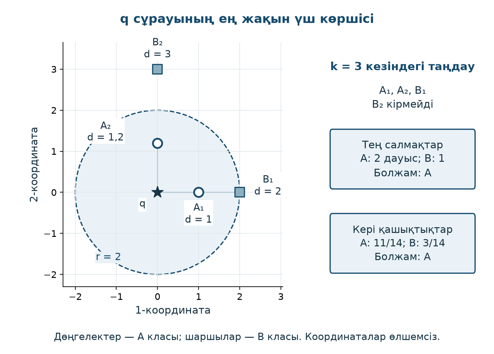
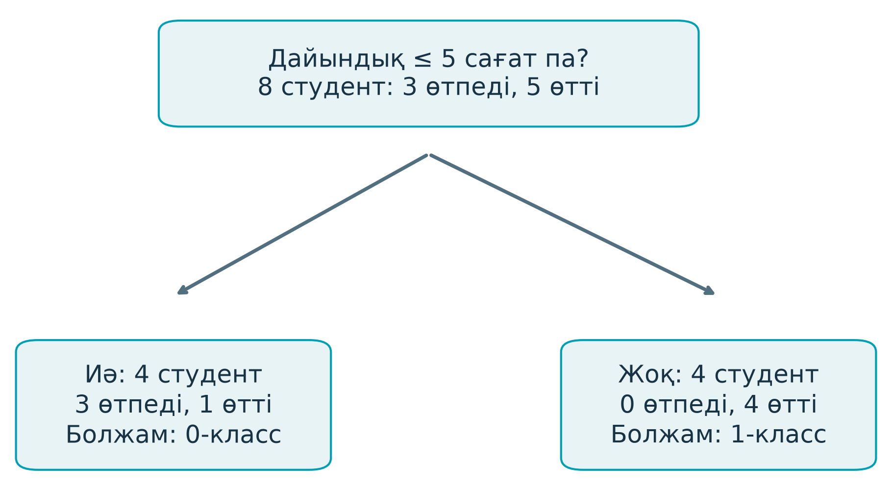
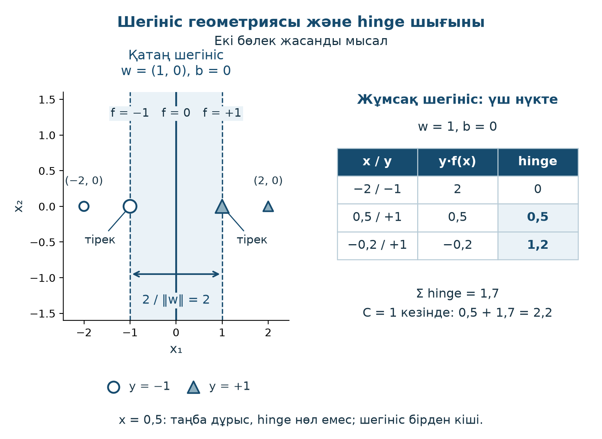
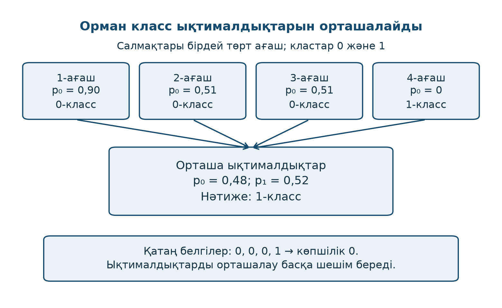
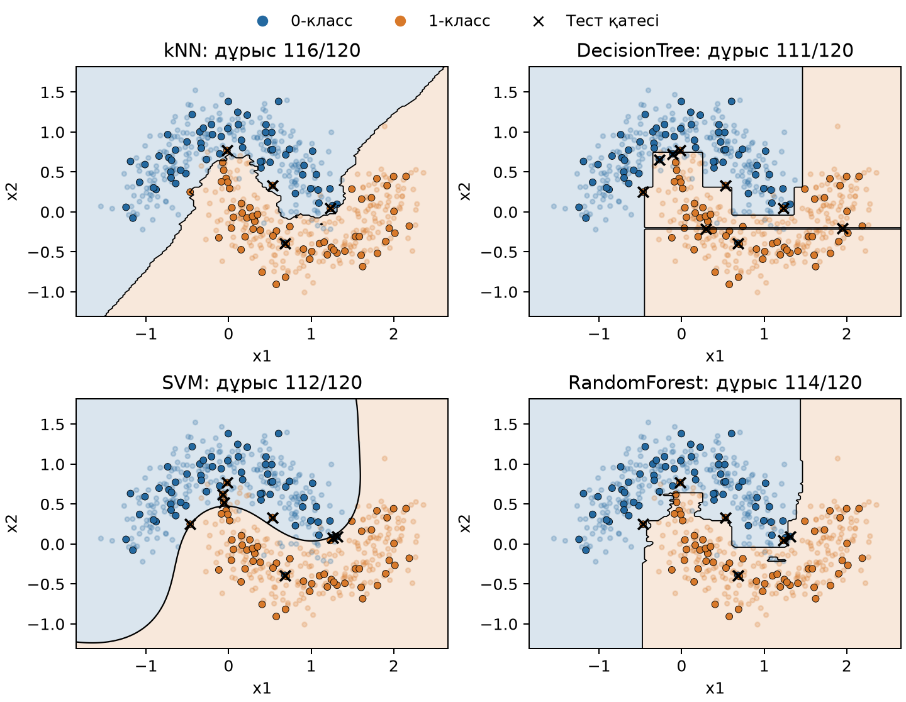
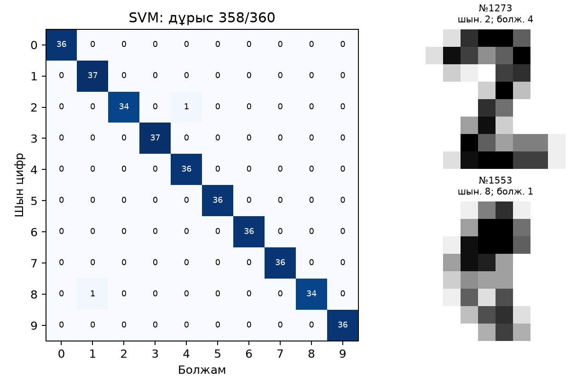

4-тарау. Жіктеу әдістері: k-NN, шешім ағаштары, SVM және Random Forest.
4.1 Тақырыпқа бағдар
Бір кестенің өзінде кластар арасындағы шекараны әртүрлі тәсілмен жүргізуге болады. Көршілер әдісі жаңа бақылаудың жанында қандай белгілі объектілер тұрғанын анықтайды. Ағаш белгілерді ретімен тексеріп, объектіні жапырақтардың біріне жатқызады. Тірек векторлар әдісі саңылауы бақыланатын бөлуші бетті іздейді. Кездейсоқ орман бір-бірінен ерекшеленетін көптеген ағашты біріктіреді. Осы құрылымдардың айырмашылықтары деректерге қандай түрлендірулер қажет екенін, есептеу ресурстары қайда жұмсалатынын және қателерді қалай зерттеу керектігін анықтайды.
Тараудың мақсаты — геометрияны, оқыту критерийін және бағдарламалық іске асыруды байланыстыра отырып, жіктеуіштердің төрт тобының жұмысын түсіндіруді және тексеруді үйрену. Тарауды меңгерген студент k-NN болжамын қолмен есептейді, ағаштың бөліну сапасын бағалайды, шегініс пен hinge шығынын табады, C мен gamma рөлдерін түсіндіреді, ағаштардың шығыстары бойынша орманның ықтималдық болжамын қалпына келтіреді және әдістерді ортақ тексеру объектілерінде салыстырады. Практика силлабустың 2.2 индикаторын жалғастырады: оқылатын әдістерді жіктеу мен регрессияның қолданбалы есептеріне пайдалану.
Алғашқы екі тараудағы белгі мен класс, оқыту және тест жиындарына бөлу, масштабтау және Pipeline ұғымдары қажет. 3-тараудан скаляр көбейтінді, сызықтық предиктор, оңтайландыру идеясы және санның, шектік шешімнің, ықтималдықтың айырмашылығы қолданылады. Вектор нормасы мен қашықтық қолданылатын тұста енгізіледі. Зертханалық жұмыс үшін NumPy негізгі операциялары мен бірыңғай fit/predict интерфейсі жеткілікті.
Негізгі ұғымдар: қашықтық, жергіліктілік, көршілік, түйіннің біртексіздігі (impurity), жапырақ, саңылау (margin), шегініс, тірек вектор (support vector), hinge шығыны, ядро (kernel), bootstrap, бэггинг, белгілердің кездейсоқ ішкі жиыны және OOB бағасы. Оқу реті жергілікті дауыс беруден ережелер тізбегіне, одан саңылауды оңтайландыру мен ағаштарды біріктіруге өтеді. Тарау соңында осы айырмашылықтар екіөлшемді доғалар мен цифр кескіндерінде зерттеледі. Тәжірибе нәтижелері нақты мысалдар ретінде беріледі; олардан бір алгоритмнің әмбебап басымдығы туралы қорытынды шығаруға болмайды.
Әр әдіс үшін төрт сұраққа жауап беру қажет: оқытылған модель нені сақтайды; жаңа сұрауға жауапты қалай алады; оның икемділігін не реттейді; қорытынды қандай тәуелсіз тексерумен расталған. Мұндай сипаттама кітапханадағы жеке класс атауын жаттаудан пайдалырақ. Мысалы, көршілер әдісінде fit құны төмен болғанымен, әр болжамда есептеу жүргізілетінін, ал ағаштың бір шарты түсінікті болуы тұтас орманның қарапайым болуына кепілдік бермейтінін байқауға мүмкіндік береді.
4.2 k ең жақын көрші әдісі
Ең жақын көршілер әдісі жаңа объектіні бұрыннан белгілі мысалдармен жергілікті салыстыру арқылы шешім құрады. Рұқсат етілген белгілері бойынша жақын объектілердің жауаптары әдетте бірдей болса, олардың белгілерін болжауға пайдалануға болады. Бұл болжам есепке сәйкес келуі тиіс. Екі құрылғы әртүрлі режимде жұмыс істесе, температураларының жақындығы оларды өзара алмастырылатын етпейді. Көршілер санын таңдамас бұрын зерттеуші объектіні қандай координаталар сипаттайтынын және олардың арасындағы қашықтық нені білдіретінін анықтайды.
Қарапайым k-NN әдісінде түзуді оқытудағыдай аз ғана жаһандық коэффициенттер жиыны ізделмейді. Оқыту объектілері мен класс белгілері сақталып, негізгі жұмыс сұрауды өңдеуге ауысады. Жаңа векторға дейінгі қашықтықтар есептеледі, оқыту жиынынан k ең жақын объект таңдалып, жауаптары біріктіріледі. Бұл тәсіл параметрлік емес әдістерге жатады: сипатталатын тәуелділіктің күрделілігі алдын ала бекітілген коэффициенттер санымен шектелмейді. Бұл баптаулар жоқ дегенді білдірмейді. Көршілер саны, метрика, салмақтау ережесі және іздеу тәсілі нәтижеге елеулі ықпал етеді.
d сандық координата үшін Минковский қашықтықтарының тобы жиі қолданылады. Келесі өрнектегі r — белгілер саны емес, қашықтық реті:
r = 2 болғанда Евклид қашықтығын, r = 1 болғанда абсолют айырмалардың қосындысын аламыз. Олардың геометриясы әртүрлі: объектілердің жақындық реті бір есепте бірдей, екіншісінде өзгеше болуы мүмкін. Метриканы таңдау — белгілерді дайындаумен бірге тіркелуге тиіс модельдің мазмұндық бөлігі. KNeighborsClassifier интерфейсінде Минковский реті p параметрімен беріледі [1]; оны кітаптың басқа формулаларындағы өлшемділік белгілеуімен шатастырмау керек.
Өлшем бірліктерінің айырмашылығы координаталардың үлесіне әсер етеді. Ұзақтық сағаттың орнына минутпен жазылса, физикалық бақылаулар өзгермесе де, сандық айырмалар артады. 2-тарауда көрсетілгендей, тек осындай жазудың салдарынан ең жақын объект ауысуы мүмкін. Оқыту бөлігінде орындалған масштабтау сандық ауқымдарды үйлестіреді. Алайда бірдей масштаб белгілердің қолданбалы маңызы бірдей екенін дәлелдемейді. Кейде пәндік салмақтар немесе басқа ұсыну қажет; олар да қорытынды test жиынын пайдаланбай таңдалады.
Таңдалған көршілер жиынын N_k(x) деп белгілейік. vᵢ салмақтары теріс емес, ал таңдалған көршіліктегі қосындысы оң. Әр класс үшін оның өкілдерінің салмақтарын қосамыз; қосындыны нормалау класс ықтималдығының жергілікті бағасын алуға мүмкіндік береді:
Оң салмақтар тең болса, бұл — кәдімгі дауыс беру. Қашықтықтар оң болғанда оларға кері пропорционал салмақтар алуға болады: жақын объектінің үлесі үлкен болады. Ереже шешімге де, сенімділіктің сандық бағасына да әсер етеді. Дауыс үлесін кез келген жаңа жиынтық үшін автоматты түрде калибрленген ықтималдық деп санауға болмайды. Көршілер саны аз болса, үлестің мүмкін мәндері ірі қадаммен өзгереді, ал белгілерді ұсынудың жүйелі қатесі нормалаудан кейін де сақталады.
Есептеу мысалы 4.1. Дауыс беру және қашықтық салмақтары
Сұрау q = (0; 0) болсын, ал оқыту нүктелерінің координаталары үйлестірілген, өлшемсіз болсын. A класына A₁ = (1; 0) және A₂ = (0; 1,2), B класына B₁ = (2; 0) және B₂ = (0; 3) жатады. Координаталар нүктелі үтірмен ажыратылған, сан ішіндегі үтір ондық бөлшекті білдіреді. Евклид қашықтықтары тиісінше 1; 1,2; 2 және 3. k = 3 кезінде A₁, A₂ және B₁ таңдалады. Төртінші нүкте қалғандарынан алыс және таңдалған көршілікке кірмейді; жауапты өзгерту үшін оны қосуға болмайды.
Салмақтар тең болғанда A класы үш дауыстың екеуін, B класы біреуін алады. Нормаланған бағалар 2/3 және 1/3, сондықтан A болжанады. Енді кері қашықтықтарды берейік: таңдалған нүктелердің салмақтары 1, 5/6 және 1/2. A класының жалпы салмағы 11/6, B класының салмағы 1/2, барлық салмақтың қосындысы 7/3. A үшін нормаланған баға (11/6)/(7/3) = 11/14 ≈ 0,785714, B үшін 3/14 ≈ 0,214286. Шешім өзгерген жоқ, бірақ үлестер арақатынасы өзгерді.

Дереккөз: 4.1 жасанды есептеу мысалының түпнұсқа сызбасы.
4.1-суретте сұрау, оқыту нүктелері және үш көршіні қамту шекарасы көрсетілген. Бұл жасанды мысалда қашықтықтар әртүрлі, сондықтан ең жақын нүктелер жиыны бірмәнді таңдалады. Мұндай бірмәнділікті кез келген кестеге көшіруге болмайды. k-шы және келесі объектілердің қашықтықтары тең, ал кластары әртүрлі болса, көршілердің нақты құрамына қосымша ереже қажет. scikit-learn құжаттамасында мұндай жағдайда нәтиже оқыту жолдарының ретіне тәуелді болуы мүмкін екені көрсетілген [1].
Көршілер таңдалғаннан кейін де дауыстар тең түсуі мүмкін. Жұп k екі класқа бірдей дауыс санын алуға мүмкіндік береді. Тақ k екі класс пен тең салмақтар үшін мұндай мүмкіндікті азайтады, бірақ көпкластық не салмақталған дауыс берудегі теңдікті жоймайды. Іске асыру ережесін біліп, класс белгілерінің ретін сақтау қажет. (4.2) формуласындағы тиістілік белгісі математикалық максимумға бірнеше класс жетуі мүмкін екенін көрсетеді. Қайталанатын алгоритмде бұл жиын айқын таңдалған келісім бойынша бір жауапқа айналады.
Нөлдік қашықтық бөлек өңдеуді талап етеді: нөлге кері шама кәдімгі ақырлы салмақ бермейді. scikit-learn кітапханасының тексерілген іске асыруында қашықтық салмақтары қолданылып, таңдалған көршілікте дәл сәйкестіктер болса, сәйкес нүктелер ескеріліп, нөлдік емес қашықтықтағы нүктелердің үлесі нөлге теңестіріледі [5]. Сәйкестіктердің класс белгілері әртүрлі болса, мәселе өздігінен жойылмайды: жүйе белгілеудің бірмәнді еместігіне тап болады. Мұндай жағдайды байқатпай еркін алынған өте үлкен санмен алмастыруға немесе шығу тегін зерттемей, қолайсыз дубликатты өшіруге болмайды.
k саны жергілікті маңайдың көлемін басқарады. Кіші мән шекараның ұсақ бөлшектерін сипаттауға мүмкіндік береді, бірақ нәтижені шулы класс белгісіне не кездейсоқ объектіге сезімтал етеді. Үлкен мән көбірек бақылауды орташалап, шағын мазмұнды топты жасыруы мүмкін. Салмақтар тең және k train көлеміне тең болғанда, шешім сұрауға тәуелсіз жалпы көпшілікке келіп тіреледі. Бұл қорытынды сұраудың орнына тәуелді болып қалатын қашықтық салмақтарына тура мағынасында қолданылмайды.
k валидацияда немесе айқас тексеру ішінде таңдалады. Салыстырылатын баптаулар үшін бірдей жолдар жиыны қолданылып, масштабтау рұқсат етілген оқыту бөлігінде қайта оқытылады. k мәні берілген бөліністегі қолжетімді оқыту объектілерінің санынан аспауы тиіс. Сондықтан көршілік көлемінің жарамдылығы тек бүкіл бастапқы кестеге емес, ең кіші train фолдына қатысты тексеріледі. Үлкен k кезіндегі төмен train-score мен k = 1 кезіндегі жоғары мән таңдауды әлі анықтамайды: жаңа объектілердегі сапа маңызды.
Көршілер санының бекітілуі маңайдың физикалық радиусы бірдей дегенді білдірмейді. Жиынның тығыз бөлігінде қажетті объектілер жақын, ал сирек бөлігінде сұраудан алыс орналасуы мүмкін. Осы екі жағдайда бірдей дауыс үлесінің бақылаулармен расталу дәрежесі әртүрлі. Сондықтан қателерді талдағанда таңдалған көршілерге дейінгі қашықтықты сақтап, оқыту деректерінен алыс сұрауларды зерттеген пайдалы. Осындай қашықтық бойынша ескерту не бас тарту ережесі де негіздеуді және рұқсат етілген деректерде баптауды қажет етеді; оны k-ның бір мәнінен шығатын әмбебап салдар деуге болмайды.
Сақталған жолдардың өзіндегі сапаны ерекше сақтықпен бағалайды. Сұрау оқыту объектісімен сәйкес келсе, ең жақын көршілікте сол объектінің өзі, өз белгісімен жиі болады. Мұндай тәжірибе негізінен бұрыннан белгілі мысалды қайта жаңғыртуды тексереді. Ол жаңа құрылғыға немесе болашақ кезеңге қолдануды модельдемейді. Жолдар формалды түрде бөлінсе де, бөліктер арасындағы дубликаттардың қабаттасуы осы мәселені туғызады. Сондықтан жергілікті әдісте бақылау бірлігі мен топтық бөлудің дұрыстығы қашықтықты таңдау сияқты маңызды.
Өлшемділіктің өсуі жергіліктілік ұғымының өзін күрделендіреді. Бақылаулардың елеулі санын қамту үшін көп координаталы кеңістіктегі маңай әр координата бойынша кең болуы мүмкін. Шулы белгілер жауаппен байланысы жоқ айырмашылықтар қосады, ал көптеген типтік үлестірімде қашықтықтардың жалпы деңгейіне қатысты айырмашылығы азаяды. Бұлар — өлшемділік қарғысының көріністері. Олар бағандар саны көп кезде k-NN қолдануға әмбебап тыйым салмайды: деректердің нақты құрылымы, ақпаратты бағыттар саны және таңдалған жақындық өлшемі маңызды.
Белгілерді іріктеу немесе өлшемділікті азайту көршілікті жақсарта алады, бірақ түрлендіру мақсатты есеп үшін пайдалы ақпаратты сақтауы тиіс. Әдемі екіөлшемді проекция жіктеудің жақсарғанын дәлелдемейді. Сол сияқты бір сандық белгіні қайталау жаңа өлшем қоспай, оның қашықтыққа үлесін арттырады. Мұндай өзгерістерді тұрақты валидацияда зерттеп, нәтижені әдіс атауымен ғана түсіндірудің орнына қай көршілер мен қателер өзгергенін бөлек көрсеткен ыңғайлы.
Тікелей іздеуде бір сұраудан n объектіге дейінгі қашықтықтарды есептеу шамамен O(nd) операцияны талап етеді. Одан кейін ең жақын элементтерді таңдау қажет; құны іріктеу тәсіліне, мысалы шектеулі кезекті жүргізуге немесе жартылай реттеуге тәуелді. Тығыз оқыту координаталарын сақтау O(nd), класс белгілерін сақтау қосымша O(n) жадты қажет етеді. Көптеген сұрауды өңдеу осы жұмыстың елеулі бөлігін қайталайды. Алдын ала сақталған барлық жұптық қашықтықтар матрицасының көлемі n бойынша квадраттық болады.
KD-tree немесе Ball-tree сияқты іздеу құрылымдары, әсіресе геометрия қолайлы және тиімді өлшемділік төмен болғанда, тексерілетін қашықтықтар санын азайта алады [2]. Оларды құруға уақыт пен жад қажет; кез келген кестеде жылдамдау кепілдендірілмейді. Қолайсыз өлшемділікте іздеу толық қарап шығуға жақындайды. Сондықтан құрылымды дайындау уақыты мен қажетті сұрау ағынындағы жауап уақытын бөлек өлшеу керек. Математикалық дауыс берудің қарапайым болуы үлкен жиынға қолданудың автоматты түрде арзан екенін білдірмейді.
4.3 Шешім ағаштары
Шешім ағашы шекті қалай бағалайды?
4.2-есептеу мысалындағы бір бөліну кандидаты. Бөлінудің сапасы екі еншілес түйіннің салмақталған біртексіздігімен бағаланады.
8 нысанның бесеуі A, үшеуі B класына жатады. Түбірдегі Gini мәні 15/32.
Барлық қадамның мәтіні
- Түбір түйіні — 8 нысанның бесеуі A, үшеуі B класына жатады. Түбірдегі Gini мәні 15/32.
- Бөлу ережесі — Дайындық уақыты 5 сағаттан аспаса, нысан сол тармаққа өтеді. 5 сағаттан көп болса, оң тармаққа өтеді.
- Еншілес түйіндер — Сол жақта 1 A және 3 B бар, Gini = 3/8. Оң жақта 4 A бар, Gini = 0.
- Gini азаюы — Түйіндерде 4 нысаннан болғандықтан, салмақталған Gini = 3/16. Азаюы 15/32 − 3/16 = 9/32. Бұл нәтижені өзге жарамды шектермен салыстыру қажет.
Ағаш белгілерді тексеру иерархиясын құрады. Жаңа объект жолын түбірден бастайды, әр ішкі түйінде шартты тексеріп, сәйкес тармаққа өтеді. Жапырақта жауаптардың қорытынды сипаттамасы сақталады. Кәдімгі сандық ағашта шарт «x_j координатасы t шегінен үлкен емес» түрінде болады. Осындай шарттар тізбегі болжамы бірдей кеңістік аймағын анықтайды. Шағын ағашты мазмұнды ережелер жиыны ретінде оқуға болады; мыңдаған түйіні бар үлкен ағашты тұтас түсіну қиын.
Қарастырылатын тәсіл CART — Classification and Regression Trees ұғымымен байланысты. Жіктеу есебінде алгоритм түйіндердегі кластардың араласуын азайтатын бинарлық бөліністерді ретімен құрады. Оқыту ашкөз тәсілмен жүреді: ағымдағы қадамда ағымдағы жиынды бөлудің жақсы, рұқсат етілген нұсқасы таңдалады. Алгоритм барлық мүмкін соңғы ағаштарды қарастырмайды, сондықтан жергілікті ең жақсы шек жаһандық ең жақсы құрылымға кепілдік бермейді. Бұл шектеу ағаштың деректер құрамына және өсу баптауларына сезімталдығын түсіндіреді.
Сандық критерий үшін алдымен түйіндегі әр кластың үлесі анықталады. s_i — оқыту объектісінің теріс емес салмағы, W_t — t түйініндегі салмақтар қосындысы болсын:
Барлық салмақ бірлікке тең болса, бұл — класс объектілерінің кәдімгі үлесі. Аралас түйінде бірнеше нөлдік емес үлес, таза түйінде бірге тең жалғыз үлес болады. Біртексіздіктің кең таралған екі өлшемі — Gini және энтропия. Энтропияны қолмен есептегенде негізі екі логарифмді қолданамыз:
Таза түйінде екі өлшем де нөлге тең және кластар араласқан сайын өседі. Ықтималдықтары тең екі класс үшін Gini бір екіншіге, энтропия бір битке тең. Бұлар әртүрлі шкалалар, сондықтан екі критерийдің сандарын бір сапа шамасы ретінде салыстыруға болмайды. Логарифм негізін өзгерту энтропияның барлық мәнін бір оң тұрақтыға көбейтеді. Шектеулер бірдей болса, бұл ұтыстардың ретін сақтайды, бірақ ең аз жақсарудың сандық шегін де таңдалған шкаламен үйлестіру қажет.
Gini мағынасын түйіндегі кластар үлестірімінен класс белгісін екі рет тәуелсіз таңдау арқылы түсіндіруге болады. Белгілердің сәйкес келу ықтималдығы үлестер квадраттарының қосындысына, сәйкес келмеу ықтималдығы осы қосындыны бірге толықтыруға тең. Бұл критерийдің араласу кезінде өсуін түсіндіреді. Алайда ағаш жапырақта әдетте осындай үлестірімнен кездейсоқ белгі таңдамай, ең ықтимал класты береді. Сондықтан Gini көпшілік жіктеуішінің қатесімен сәйкес келмейді, дегенмен екі шама да бір түйіннің құрамын сипаттайды.
Энтропиялық критерий жапырақтың ықтималдық сипаттамасымен байланысты. Аймақтағы барлық объектіге бір класс үлестірімі тағайындалса, бақыланған жиіліктер осы үлестірімнің табиғи бағасын анықтайды. Сонда жапырақтағы жауаптардың орташа теріс логарифмдік ықтималдығы оның энтропиясы арқылы өрнектеледі. Бұл бөліністерді таңдауды ықтималдық шығынымен байланыстырады, бірақ жергілікті ашкөз оңтайландыруды барлық құрылым ішінен ең жақсы ағашты іздеуге айналдырмайды. Оқыту жапырағының энтропиясын қолданыстағы ықтималдықтарының тексерілген сапасымен де теңестіруге болмайды.
Бөліну кандидаты үшін бір еншілес түйінді таза ету ғана емес, екі бөлікті де, олардың көлемін де ескеру маңызды. I таңдалған біртексіздікті білдірсе, жергілікті азаю былай анықталады:
Мұнда әр бөліктің жиынтық салмағы оң бөліністер қарастырылады. Салмақтар болмаса, W_L/W_t және W_R/W_t үлестері объектілер санының қатынасымен алмастырылады. Екі біртексіздіктің жай орташа мәні бөліктердің жиынтық салмақтары тең болғанда ғана дұрыс. Әйтпесе шағын таза жапырақ бағаға негізсіз үлкен үлес қосар еді. Ата-аналық түйін бекітілгенде, азаюды барынша арттыру еншілес түйіндердің салмақталған біртексіздігін барынша азайтуға эквивалентті.
Есептеу мысалы 4.2. Сегіз объектіні бөлу
Оқу мысалындағы түйінде бес A объектісі («өтті», 1-класс) және үш B объектісі («өтпеді», 0-класс) бар. Gini мәні 1−(5/8)²−(3/8)² = 15/32 = 0,46875. Дайындық уақытының берілген бес сағаттық шегі сол жақта бір A мен үш B, оң жақта төрт A береді. Сол түйін үшін 1−(1/4)²−(3/4)² = 3/8 = 0,375 аламыз. Оң түйін таза, оның Gini мәні нөл.
Екі бөліктің әрқайсысында төрт объект бар. Салмақталған біртексіздік (4/8)·(3/8) + (4/8)·0 = 3/16 = 0,1875. Gini азаюы 15/32−3/16 = 9/32 = 0,28125. Бұл мәндер бір бөліну кандидатын сипаттайды. Оны ең жақсы деп атау үшін сол ата-аналық түйіндегі барлық басқа жарамды кандидатпен салыстыру қажет.
Ата-аналық түйіннің энтропиясы үшін −(5/8)log₂(5/8)−(3/8)log₂(3/8) ≈ 0,9544340029 бит аламыз. Сол жақтағы энтропия −(1/4)log₂(1/4)−(3/4)log₂(3/4) ≈ 0,8112781245, оң жақта нөл. Бөлгеннен кейінгі салмақталған мән 0,4056390622, ұтыс 0,5487949407 бит. Энтропиялық ұтысты Gini азаюына теңестіруге болмайды: критерийлер бір бөліністі әртүрлі шкалада бағалады.

Дереккөз: «Машиналық оқыту» курсының авторлық оқу материалдары, 4-дәріс «Жіктеу», 7-слайд, үзінді.
4.2-суретте ата-аналық түйін мен екі ұрпақ көрсетілген. Ағашты бөлінгеннен кейін бірден тоқтатсақ, сол жапырақ B, оң жапырақ A класын береді. Жалғыз қате сол жапырақтағы A объектісіне келеді. Бөлінуге дейін жалпы көпшілік A болжамы B объектілерінде үш қате берген. Қате үлесі мен Gini кластар құрамын әртүрлі сипаттайды және әртүрлі шкалаларда өлшенеді.
Сандық шекті табу үшін алгоритм ағымдағы түйіндегі белгінің реттелген мәндерін қарастырады. Көршілес екі әртүрлі мәннің арасындағы шектің әртүрлі орны оқыту жолдарын бірдей бөледі; аралық мәнді қолдану ыңғайлы. Екі бөліктің де жарамдылығы тексеріледі: жапырақ көлемінің жеткіліктілігі, рұқсат етілген салмақтар және басқа шектеулер. Критерийді жақсартатын кез келген шек осы шарттарды бұзса, қабылдана бермейді. Координата мәндері сәйкес келгенде, шек объектілерді сол координата бойынша бөле алмайды.
Одан кейін іздеу еншілес түйіндерде қайталанады. Тереңдік пен жапырақтар саны ағаштың өрнектеу қабілетін анықтайды. Терең құрылым ұсақ ерекшеліктерді, соның ішінде шулы белгілерді ажырата алады. Шағын жапырақтар класс үлестерінің өте құбылмалы бағаларын береді. Тереңдікті, жапырақтың ең аз көлемін және бөліністің жарамдылық талаптарын шектеу икемділікті азайтады. Кейіннен ағашты қырқу құрылымды шектеудің басқа тәсілін береді; параметрлер test жиынын көргеннен кейінгі ережелердің тартымдылығы бойынша емес, валидация бойынша таңдалады.
Тоқтау жапырақтағы барлық жауап бірдей дегенді міндетті түрде білдірмейді. Түйін тереңдік шектеуінен, жарамды бөліктер көлемінің жеткіліксіздігінен немесе қолайлы белгінің болмауынан аралас күйде қалуы мүмкін. Бұл — егжей-тегжейлілік пен тұрақтылық арасындағы саналы ымыра. Екінші жағынан, нөлдік жергілікті жақсарудан кейін өзара әрекеттесетін белгілердің пайдалы бөліністері келуі мүмкін. Ұтыстың қатаң оң болуын талап ету мұндай жолға тыйым салуы ықтимал. Сондықтан тоқтау ережесі критерий таңдалғаннан кейінгі бейтарап техникалық бөлшек емес, алгоритм анықтамасының бөлігі.
Ұтыстары тең бірнеше нұсқа болса, келесі тармақтар әртүрлі болуы мүмкін. Нақты іске асыруда таңдауға белгілерді тексеру реті мен кездейсоқ сандар генераторы ықпал етеді. Бағдарламалық тәжірибені қайталау үшін random_state пен кітапхана нұсқасы сақталады. Бірақ бір бекітілген іске қосуда нәтиженің сәйкес келуі құрылымның жаңа бақылауларға тұрақтылығын дәлелдемейді. Бұл екі қасиет бөлек тексеріледі: алдымен процедура қайталанады, содан кейін оқыту жиынының рұқсат етілген өзгерістерінде ережелердің өзгеруі зерттеледі.
scikit-learn кітапханасында min_samples_split пен min_samples_leaf әртүрлі шарттарға жауап береді: біріншісі түйінді бөлу мүмкіндігін, екіншісі алынатын әр бөліктің көлемін шектейді [4]. min_impurity_decrease шарты қосымша ағымдағы түйін салмағының бүкіл оқыту жиынындағы үлесін қолданады. Сондықтан (4.5) жергілікті азаюы мен жаһандық азаюдың бағдарламалық шамасы сан жағынан әрдайым бірдей емес. Түбірде түйін үлесі бірге тең, сондықтан қолмен есептеу мысалына қосымша көбейткіш қажет емес.
Жапырақ класы ең үлкен бағаланған үлеспен, ал ықтималдық шығысы сол жапырақтың класс үлестірімімен анықталады [3]. Мысалдағы сол жапырақта бағалар A үшін 1/4, B үшін 3/4, оң жақта 1 және 0. Таза жапырақ аймағындағы жаңа объектінің A-ға тиістілігі модель болжамы болып қалады. Класс салмақтары қолданылса, үлестер салмақталған оқыту есебін көрсетеді. Жапырақ сенімділігі мен жаңа объектілердегі калибрлеу дербес тексеруді талап етеді.
Кәдімгі осьтік бөліністерде бір сандық белгіні қатаң өсетін түрлендіру оның мәндерінің ретін және жолдарды бөлудің мүмкін жиынын сақтайды. Сондықтан көршілерге қажет болғандай үйлесімді сызықтық масштабтау ағашқа әдетте қажет емес. Алайда атаулық санаттардың еркін сандық коды бұрын болмауы мүмкін реттілік тудырады. Қарастырылатын DecisionTreeClassifier үшін санаттар айқын дайындалады. Жетіспейтін мәндерді қолдау нақты конфигурация мен нұсқаға тәуелді; кез келген ағаш өңделмеген санаттар мен жетіспейтін мәндерді бірдей өңдейді деп автоматты түрде айтуға болмайды [3].
Шекті іздеу құны іске асыруға тәуелді. m объектісі бар түйінде d белгіні сұрыптау шамамен O(dm log m), дайын кандидаттарды қарау O(dm) операцияны талап етеді. Жалпы құн түйіндер бойынша қосылады. Қайта сұрыптау және теңгерімді өсу кезінде шамамен O(dn log²n) бағасы алынады; өте біркелкі емес бөліністе ол едәуір нашарлауы мүмкін. Сақталған реттіліктерді қолдану бұл бағаны өзгертеді, сондықтан барлық іске асыруға ортақ бір әмбебап ағаш оқыту құны жоқ.
Қолдану ұзындығы h болатын бір жолмен жүреді және O(h) тексеруді қажет етеді. Теңгерімді құрылымда h бақылаулар санына қатысты жиі логарифмдік өседі, бірақ азғындалған терең ағаштың биіктігі сызықтыққа жуық болуы мүмкін. Оқытылған модель шектерді, өту белгілерін және жапырақ мәліметтерін сақтайды, сұрауды барлық оқыту жолымен қайта салыстыруға міндетті емес. Жад түйіндер мен кластар санына тәуелді; кластар саны бекітілсе, құрылым көлеміне сызықтық тәуелді. Жауап кідірісін шектегенде бұл айырмашылықтарды ескеру маңызды.
Ағаш шектеулері шамадан тыс үйренумен шектелмейді. Деректердің шағын өзгерісі бастапқы шекті ауыстырып, кейінгі тармақтарды өзгертуі мүмкін. Көлбеу шекараны бірнеше осьтік саты арқылы жуықтауға тура келеді; ұқсас болжамдардың ережелер жиындары едәуір ерекшеленуі мүмкін. Жеке түйіннің түсінікті шарты тұтас құрылымды себептік модельге айналдырмайды. Тұрақтылықты, жапырақ көлемдерін және нақты қателерді рұқсат етілген тексерудегі сапамен бірге зерттеу пайдалы.
Кесте 4.1. Көршілер мен ағаштың мінез-құлқын не анықтайды
| Сұрақ | k-NN | Шешім ағашы |
|---|---|---|
| Жергіліктілік қалай беріледі? | Метрика және таңдалған көршілік арқылы | Шарттар жолы және жапырақ аймағы арқылы |
| Икемділікті не шектейді? | Көршілер саны, салмақтар және ұсыну | Тереңдік, жапырақ көлемдері және қырқу |
| Өлшем бірліктері неге маңызды? | Сандық қашықтықтарды өзгертеді | Монотонды түрлендіруде осьтік бөліністер ретін әдетте сақтайды |
| Болжаудағы негізгі жұмыс қайда? | Көршілерді іздеу және біріктіру | Сақталған шарттардан өту |
Екі әдіс те объект пен бөліністі дұрыс анықтауды талап етеді. Жергілікті көпшілік те, таза жапырақ та тәуелсіз бағалауды алмастырмайды. Салыстыру жалпы көрсеткішпен қатар белгілерді ұсыну, сирек топ немесе өзгерген жағдайлар шешімді сенімсіз ететін аймақтарды көрсетуі тиіс. Осы негізде келесі тәжірибе таңдалып, қолданудың түсіндіруге болатын шектеулері сақталады.
4.2–4.3-бөлімдерге арналған бастапқы дереккөздер
- Scikit-learn. KNeighborsClassifier.
- Scikit-learn. Nearest Neighbors.
- Scikit-learn. Decision Trees.
- Scikit-learn. DecisionTreeClassifier.
- Scikit-learn, 1.9.1 нұсқасы. Көрші салмақтарының бастапқы іске асыруы.
Құжаттама 04.11.2026 күні тексерілді. Авторлық тақырыптық негіз: 4-дәріс, 5–8, 13 және 19–20-беттер мен слайдтар; 4-зертханалық жұмыс, қолмен есептеу және параметрлерді зерттеу бөлімдері. Осы мәтіннің мысалдары жасанды және бөлек есептелген.
4.4 Тірек векторлар әдісі: геометрия және критерий
4.4.1 Бөлуші бет және шегініс
SVM бинарлық есебінде кластарды −1 және +1 сандарымен белгілеу ыңғайлы. Бұл — математикалық қорытуға арналған келісім, кітапхана жіктеуішіндегі кез келген жолдық белгіні алдын ала қайта кодтау талабы емес. f сызықтық функциясы шекараны өзінің нөлдік деңгейімен анықтайды. Оң мәнде бір класс, теріс мәнде екіншісі таңдалады; теңдік кезіндегі нақты ереже бөлек бекітіледі. Нөлдік емес w векторы үшін жазықтыққа дейінгі кәдімгі қашықтық |f(x)|/||w||₂ болады. f таңбасын сақтап, шын класс белгісіне көбейтсек, дұрыс жаққа қатысты таңбалы қашықтық аламыз:
mᵢ саны функционалдық шегініс деп аталады. Дұрыс жақ таңдалса, ол оң, қате болса, теріс болады. Алайда оның шамасы w мен b ортақ масштабына тәуелді. Екеуін де онға көбейтсек, шекара мен кластық шешімдер өзгермейді, ал mᵢ он есе артады. Осындай оң масштабтауда dᵢ геометриялық қашықтығы сақталады. Сондықтан оқытуды сызықтық функция мәндерін бақылаусыз арттыруға келтіруге болмайды.
Оқыту кластары сызықтық бөлінетін болсын. Бөлуші гипержазықтықтардың арасынан әр кластың ең жақын нүктелері шекарадан барынша алыс орналасатынын іздеуге болады. Параметрлерді ең аз функционалдық шегініс бірге тең болатындай нормалаймыз. f(x)=−1 және f(x)=+1 жазықтықтары ені 2/||w||₂ жолақты шектейді. Оның енін барынша арттыру квадраттық норманы барынша азайтуға эквивалентті:
Қатаң саңылаулы есеп осылай құрылады. Бос мүше жазықтықты жылжытады, ал w нормасы қабылданған нормалауда оның енін анықтайды. Шектеулер барлық оқыту объектілеріне қатысты. Қолайлы бөлінетін есеп үшін шешім бар; бір нүктеге қайшы класс белгілерін қосу талаптарды үйлесімсіз етеді. Бөлінбеуді итерациялар санының жеткіліксіздігімен түсіндіруге болмайды: кейде ешбір рұқсат етілген түзу шарттарды қанағаттандырмайды.
Бірінші координаталары −2 және −1 болатын теріс класс нүктелерін және бірінші координаталары 1 және 2 болатын оң класс нүктелерін қарастырайық. Төрт нүктенің де екінші координатасы нөл. w=(1;0), b=0 кезінде шекара x₁=0 бойымен өтеді; ең жақын нүктелердің функционалдық шегінісі 1 және олар x₁=−1 мен x₁=1 бойында жатады. Жолақ ені 2. Осы симметриялық конфигурацияда жазықтықты жылжыту ең жақын нүктелердің біріне дейінгі қашықтықты азайтады, ал көлбеу шекара ең аз қашықтықты арттырмайды. Мысал кез келген көпөлшемді есептің шешімін алмастырмай, нормалау рөлін көрсетеді.
Шешімді ұсынуға нөлдік емес қосарлы коэффициенттермен қатысатын объектілер тірек объектілер деп аталады. Қатаң саңылаудың азғындалмаған жағдайында бұлар шектеуші жазықтықтардағы нүктелер. Ағымдағы саңылауды шектемейтін алыс нүктені өшіру шешімді өзгеріссіз қалдыруы мүмкін. Бұл — нақты оптимум жөніндегі жергілікті бақылау, деректерді өшіруге берілген жалпы рұқсат емес. Жиын, ядро немесе параметрлер өзгергеннен кейін тірек объектілер құрамы өзгеруі мүмкін.
4.4.2 Жұмсақ саңылау және hinge шығыны
Нақты кластар жиі қабаттасады. Мұндай жағдайда теріс емес ξᵢ босаңсыту айнымалылары енгізіледі: объект жолақ ішіне, тіпті шекараның қате жағына өтуі мүмкін. Бұзушылықтар үшін мақсаттық функцияда айыппұл төленеді. Сызықтық C-SVM стандартты нұсқаларының бірі былай жазылады:
f функциясы бекітілгенде, ең кіші жарамды ξᵢ нөл мен 1−mᵢ максимумына тең. Сондықтан шектеулерді hinge-loss деп аталатын бөліктеп сызықтық шығынмен алмастыруға болады:
mᵢ бірден үлкен не оған тең болса, шығын нөл. Шегініс нөл мен бірдің арасында болса, класс дұрыс таңдалған, бірақ объект жолақ ішінде орналасқандықтан шығын оң. Теріс шегіністе қате жіберілген және шығын бірден үлкен. Демек, қателер саны мен hinge шығындарының қосындысы әртүрлі сұрақтарға жауап береді. Коэффициенттерді өзгерту бұрынғы белгілерді сақтай отырып шығынды азайта алады; бұл 3-тараудағы log-loss мәнінің класс ауыспай өзгеруіне ұқсайды.
Есептеу мысалы 4.3. Шегіністер және шығындар қосындысы
w=1, b=0 бірөлшемді ережесін және үш жасанды бақылауды алайық: y=−1 болатын x=−2; y=+1 болатын x=0,5; y=+1 болатын x=−0,2. f мәндері координаталардың өздеріне тең. Белгілерге көбейту 2; 0,5 және −0,2 шегіністерін береді. Hinge шығындары 0; 0,5 және 1,2, қосындысы 1,7. Бірінші объект жолақтың сыртында дұрыс орналасқан, екіншісі жолақ ішінде дұрыс жіктелген, үшіншісі қате жақта. C=1 кезінде J мәні 0,5·1²+1,7=2,2. Бұл — берілген параметрлер үшін мақсаттық функцияны есептеу; олардың оңтайлы екенін әлі мәлімдеген жоқпыз.
w=0, b=0 нөлдік предикторы осы объектілердің әрқайсысына 0 шегініс пен 1 шығын берер еді, яғни сол C кезінде J=3. Алынған салыстыру берілген мақсат бойынша тек бір тексерілген параметрлер жиынының екіншісінен артықшылығын растайды. Ол жаһандық оптимумды дәлелдемейді, ал w=0 үшін (4.6) формуласындағы таңбалы қашықтық мүлде анықталмаған. 4.3-суретте жолақ геометриясы шығынның үш жағдайымен салыстырылған.
C артуы бұзушылықтарды коэффициенттер нормасына қатысты қымбаттатады. C азаюы көбірек бұзушылыққа жол беріп, кіші норманың салыстырмалы рөлін күшейтеді. C-ні қажетті қате пайызы немесе саңылаудың тікелей ені деп түсіну дұрыс емес. Нәтижені деректер геометриясы, ұсыну және шешім критерийлері бірге анықтайды. Қате класс белгілері бар кезде C-нің өте үлкен мәні модельді дерек мәселесі ретінде зерттеу пайдалырақ болатын кездейсоқ бөлшекті сипаттауға мәжбүр етуі мүмкін.
(4.9) формуласында шығындар қосындысы қолданылады. Орташа шығын плюс λ||w||²/2 түрінде жазу қажет болса, бүкіл мақсатты nC-ге бөлу керек: сонда λ=1/(nC). Бүкіл функцияны оң тұрақтыға көбейту минимумын сақтайды, ал тек бір қосылғышын өзгерту есепті өзгертеді. Бұл — логистикалық регрессияда кездескен үйлесімді нормалау талабы. Объект және класс салмақтары бар кезде, сандық C мәндерін әртүрлі мақсаттар арасында көшірмей, іске асыру келісімдерін қайта салыстыру керек.
Жұмсақ саңылау барлық тірек вектор дәл жолақ шетінде жатады дегенді білдірмейді. Оларға жолақ ішіндегі нүктелер мен қате жіктелген бақылаулар да кіруі мүмкін. Стандартты қосарлы шешімде коэффициенттер C-мен шектеледі, ал мәндері белсенді шектеулері бар жағдайларды ажыратады. Қосарлы есепті толық қорыту осы кіріспе курстың қажетті көлемінен тыс; түсіндіру үшін белсенді объектілерді таңдалған саңылаумен байланыстырып, сызықтық емес модельде олардың саны қолдану құнына неге әсер ететінін түсіну жеткілікті.

Дереккөз: жасанды мысалдардың түпнұсқа сызбасы мен есептеулері; сол панельде w=(1;0), b=0.
4.5 Ядролар, масштаб және SVM көпкластық іске асырылуы
Бастапқы координаталардағы сызықтық шекара кез келген доғаларды не бірінің ішіндегі бірі орналасқан аймақтарды бөлмейді. Бір жолы — полиномдық регрессиядағыдай жаңа белгілерді айқын дайындау. Ядролық әдіс әр объектінің координаталарын жазып шықпай, басқа белгілер кеңістігіндегі скаляр көбейтінділерді қолданады. Жарамды ядро осындай көбейтіндіге сәйкес келеді; кез келген ұқсастық функциясы тек атауына бола жарамды ядроға айналмайды. Стандартты құрылымдар үшін ядролық матрицаның оң жартылай анықталғандығы маңызды.
Бинарлық шешімнің ұсынылуында қосынды нөлдік емес коэффициенттері бар оқыту объектілері бойынша алынады. Радиалдық базистік ядро үшін жақындық қашықтық квадраты артқан сайын экспоненциалды азаяды:
Мұнда SV тірек векторлар жиынын, αᵢ қосарлы ұсыну коэффициенттерін білдіреді. Сызықтық жағдай K(x,z)=xᵀz болғанда алынады. RBF бастапқы координаталарда қисық шекараны өрнектеуге мүмкіндік береді; сызықтық еместік жалпылауды бағалау қажеттігін жоймайды. x=z дәл сәйкестігінде ядро бірге тең. Қашықтық ұлғайғанда оның мәні нөлге ұмтылады. Екіөлшемді зертханалық жұмыста осы геометрия тікелей көрінеді, ал цифрдың 64 белгісі үшін қателер мен сандық шығыстарды зерттеуге тура келеді.
gamma параметрі RBF кеңістіктік масштабын басқарады. Мәні үлкен болса, ұқсастық үлесі қашықтықпен тезірек азаяды, сондықтан жеке тірек объекті анағұрлым жергілікті әсер етеді. Мәні кіші болса, алысырақ нүктелер ұқсас болып шығады. Мысалы, квадраттық қашықтық 4 үшін gamma=0,5 ядросы exp(−2)≈0,135335, ал gamma=0,05 ядросы exp(−0,2)≈0,818731 болады. Бұл — ядроның бір элементін салыстыру, оқытылған екі модельдің дәлдігін дайын салыстыру емес.
C мен gamma әсерлерін ажырату керек. Біріншісі нормаға қатысты бұзушылық құнын береді, екіншісі жақындықтың ұсынылуын өзгертеді. Берілген жиында бірінің өзгерісін екіншісі ішінара өтей алады, бірақ олар өзара алмастырылатын сандық баптаулар емес. Оларды дұрыс валидация ішінде бірге зерттеу керек. test жиынындағы әдемі шекара суреті барлық көрсетілген қате жойылғанша параметрлерді қайта-қайта өзгертуге құқық бермейді.
Өлшем бірліктері RBF үшін ерекше маңызды: ірі масштабты координатаның айырмасы қашықтық квадратына кіреді. Бір баған мыңдаған бірлікпен, екіншісі үлестермен жазылса, біріншісі ұқсастықты іс жүзінде анықтауы мүмкін. Pipeline ішіндегі StandardScaler масштабтарды train бойынша бағалап, жаңа объектілерге сол сандарды қолданады. Масштабтау геометрия мен регуляризация әсерін өзгертеді. Белгінің пәндік тұрғыдан маңызды ерекше рөлі болса, барлық координатаның бірдей дисперсиясы өздігінен дұрыс шешімді анықтамайды.
scikit-learn тексерілген нұсқасында gamma="scale" мәні 1/(d·Var(X)) береді, мұнда d — кіріс белгілерінің саны, ал дисперсия SVC оқыту кірістерінің массиві бойынша есептеледі. Тұрақты емес тығыз белгілер кәдімгі стандартталғаннан кейін олардың жалпы дисперсиясы бірге жуықтап, мән 1/d-ге жақын болады. Тұрақты бағандар бұл қорытындыны өзгертеді. Осындай автоматты ереже белгілі бір масштабты қамтамасыз етеді, бірақ ең жақсы gamma таңдалғанын дәлелдемейді. gamma="auto" дисперсияны ескермей 1/d қолданады; екі ереже сәйкес келуі үшін тиісті шарттар қажет.
Бірнеше класс үшін SVC one-versus-one жұптық ажыратуларын оқытады. K класс болса, K(K−1)/2 жұптық есеп алынады: мысалы, он цифр үшін 45. decision_function_shape="ovr" параметрі ішкі жұптық оқытуды сақтай отырып, K класс бойынша қайтарылатын бағалардың пішінін анықтайды. Сондықтан decision_function ішінде K баған болуы K тәуелсіз one-versus-rest моделі оқытылғанының дәлелі емес. Оқыту сұлбасы, біріктіру тәсілі және нәтиже пішіні — интерфейстің өзара байланысты, бірақ әртүрлі сипаттары.
decision_function шығысы автоматты түрде ықтималдық болмайды. Оның таңбасы мен мәндер реті кластарды ажыратуға пайдалы, ал ықтималдық бөлек құрылып, тексерілуі тиіс. scikit-learn 1.9.1 нұсқасында SVC probability параметрі ескірген деп жарияланған; тіпті False мәнін айқын беру де ескерту туғызады. Зертханалық жұмыста SVC осы аргументсіз қолданылып, кластар бағаланады. Есепке ықтималдықтар қажет болса, құжаттама ensemble=False болатын CalibratedClassifierCV ұсынады. Әр ішкі фолд түрлендіруді тек өзінің рұқсат етілген оқыту жолдарында бағалауы үшін масштабтау калибрленетін Pipeline ішіне орналастырылады. Шығыстар реті classes_ арқылы салыстырылады.
Ядролық SVC құны бақылаулар саны мен есеп құрылымына елеулі тәуелді. Құжаттамада оқыту объектілер саны бойынша кемінде квадраттық өсетіні және ондаған мың мысал үшін іс жүзінде тиімсіз болуы мүмкін екені ескертіледі. Бұл — қарастырылатын шешушінің сипаттамасы, SVM атаулы барлық әдістің құны бірдей деген тұжырым емес. Айқын толық ядролар матрицасында n² элемент бар; іске асыру кэшті қолданады, сондықтан кез келген конфигурацияда бүкіл матрицаны міндетті түрде сақтайды деуге болмайды. Бір объектінің болжамы тірек векторлар бойынша есептеуді талап етеді; тығыз d-өлшемді кірістерде RBF үшін негізгі құны шамамен O(nSV·d), мұнда nSV — олардың саны.
Үлкен сызықтық есептер үшін LinearSVC пен SGDClassifier бар, бірақ олардың баптаулары, шығын функциялары және оңтайландыруы SVC(kernel="linear") нұсқасымен сәйкес келуге міндетті емес. Әдістер тобының атауы сәйкес болуы бірдей сандық нәтижені қамтамасыз етпейді. Шешушіні таңдау тәжірибенің есептеу жоспарына жатады және өлшемділікті, сиректікті, жад шектеулерін және қажетті болжам кідірісін ескеруі тиіс. Осы тарауда екі шағын жиындағы қайталанатын RBF-SVC жеткілікті; кеңейту кітапхананың барлық қолжетімді класын бақылаусыз іріктеуге айналмауы керек.
4.6 Кездейсоқ орман: әртүрлілік және ағаштарды біріктіру
4.6.1 Bootstrap және кездейсоқ белгілер
Оқыту деректерінің шағын өзгерісінен кейін терең ағаш елеулі өзгеруі мүмкін. Бэггинг осы қасиетті қолданады: кездейсоқ жиындарда модельдің бірнеше нұсқасын құрып, шығыстарын біріктіреді. Көлемі n bootstrap жиыны бастапқы n жолдан қайтарумен n тәуелсіз таңдау арқылы алынады. Кейбір жол қайталанады, кейбірі таңдалмайды. Бұл қиылыспайтын бөліктерге бөлу де, алдыңғы ағаштың қателерін ретімен түзету де емес.
Тең ықтималды таңдауда нақты бір жолдың бірде-бір рет алынбау ықтималдығы (1−1/n)ⁿ болады. Математикалық күтімнің сызықтылығы барлық n жолдың бар болу индикаторларын, олардың тәуелсіздігін талап етпей, қосуға мүмкіндік береді:
n үлкен болғанда бірінші үлес 0,632-ге, екіншісі 0,368-ге жуық. n=10 үшін таңдалған әртүрлі жолдардың күтілетін саны шамамен 6,513216; бұл — бір жиындағы жолдардың мүмкін бөлшек саны емес, математикалық күтім. Тізімнің өзінде қайталауларды қоса дәл он орын бар. Формула әр жолдың ықтималдығы бірдей және он рет таңдау жасалады деп ұйғарады. Bootstrap көлемі басқа немесе ықтималдықтар тең емес болса, сандар өзгереді.
Random Forest bootstrap тәсіліне әр түйінде белгілер ішкі жиынын кездейсоқ таңдауды қосады. Бір өте күшті баған барлық ағашқа үнемі қолжетімді болса, оларды ұқсас бастапқы шарттарды таңдауға итермелеуі мүмкін. Қолжетімді ішкі жиынды шектеу басқа белгілерге қатысу мүмкіндігін беріп, ағаштардың ұқсастығын азайтады. Ішкі жиын бүкіл орманға өзгермейтін тізім ретінде бір рет емес, түйіндер үшін жаңадан таңдалады. Бұл кезде жеке ағаш әлсіреуі мүмкін, сондықтан корреляцияның азаюы кез келген нақты нәтиженің жақсаруына кепілдік бермейді.
RandomForestClassifier ішіндегі типтік max_features="sqrt" мәні бөлініс іздеуде белгілер санының шамамен квадрат түбірін қарастыруға сәйкес. Цифрдың 64 координатасы үшін бұл — сегіз. Таңдалған жиында жарамды бөлініс табылмаса, нақты іздеу қосымша тексерулерге жол береді. Параметр әр дайын жолда дәл сегіз белгі бар дегенді білдірмейді. Ағаштар санын n_estimators береді, тереңдік пен жапырақ көлемдерін max_depth және min_samples_leaf басқарады. Бұл тетіктер құрылымның әртүрлі жақтарын шектейді.
Зертханалық жұмыста 200 ағаш, жапырақта кемінде екі объект және бір есептеу ағыны орнатылған; seed бекітілген. Бірнеше ағашты қатар құру есептеуді жеделдетуі мүмкін, бірақ алгоритм мағынасын тізбекті бустингке өзгертпейді. Бустингте жаңа құрамдастар ағымдағы жиынтық модельге тәуелді, ал мұнда ағаштар деректер мен белгілерді кездейсоқ өзгертуге арналған ортақ процедурамен құрылады. Ансамбльдер 9-тарауда егжей-тегжейлі салыстырылады.
4.6.2 Орман ықтималдықтары және орташалау әсері
Орман жауабын түсіну үшін алдымен жеке ағаштың шығысын нақтылау керек. Қарастырылатын жіктеуіште жапырақ өзіне түскен оқыту объектілері бойынша, салмақтарды ескере отырып, класс үлестерінің бағасын сақтайды. Scikit-learn осы ықтималдық векторларын ағаштар бойынша орташалап, содан кейін орташа ықтималдығы ең үлкен класты таңдайды:
Мұнда B — ағаштар саны. Орташалауда кластар реті үйлесуі тиіс. [0,8;0,2] векторы орындардың класс белгілеріне сәйкестігімен бірге ғана мағыналы; қосынды алдында бір модельдің бағандарын ауыстыру жауапты өзгертеді. Ықтималдық векторларын орташалағанда теріс еместік пен қосындының бірге теңдігі сақталады, бірақ бұл арифметикалық қасиет орманның жаңа деректерде калибрленгенін дәлелдемейді. Бірнеше максимум сәйкес келсе, класс белгісін таңдау келісімін де білу керек.
Есептеу мысалы 4.4. Класс белгілерімен дауыс беру неге басқа жауап беруі мүмкін
Төрт ағаш 0-кластың мына ықтималдықтарын берсін: 0,90; 0,51; 0,51 және 0,00. 1-кластың сәйкес ықтималдықтары 0,10; 0,49; 0,49 және 1,00. Алғашқы үш ағаш жеке-жеке 0-класты, төртіншісі 1-класты таңдайды. Класс белгілерімен жай дауыс бергенде 0-класс пайдасына үшке бір нәтиже болар еді. Алайда 0-кластың орташа ықтималдығы 1,92/4=0,48, ал 1-класстікі 0,52. (4.12) ережесі 1-класты таңдайды. 4.4-суретте біріктірудің екі деңгейі көрсетілген. Сондықтан нақты RandomForestClassifier жұмысын «дайын белгілердің көпшілігі» деп түсіндіру сандық тұрғыдан қате болуы мүмкін.

Дереккөз: 4.4 есептеу мысалының түпнұсқа арифметикалық сызбасы, зертханалық орманның тәжірибелік шығыстары емес.
Бұлар — біріктіру операциясын тексеруге арналған жапырақтардың жасанды жарамды ықтималдықтары; олар зертханалық жұмыстағы төрт ағаштың өлшенген нәтижесі ретінде ұсынылмайды. Нақты модельді зерттегенде estimators_ шығыстарын бөлек алып, орташа мәнін тексеруге болады. Әр ішкі ағаштың кластарды ұсынуын салыстыру қажет. Мұндай техникалық талдау іске асыруды түсінуге пайдалы, бірақ негізгі ашық болжам интерфейсі бүкіл орманның predict және predict_proba әдістері болып қалады.
Қарапайым есептеу ансамбльге әртүрлілік не үшін қажет екенін түсіндіреді. Бекітілген объект үшін B модельдің сандық шығыстарының дисперсиясы бірдей σ², әр жұптың корреляциясы бірдей ρ болсын. Бұл шығыстардың кездейсоқтығы оқыту деректерін қайта қалыптастыру мен ағаштарды құру кезінде қарастырылады; x сұрауының өзі бекітілген күйде қалады. Қосынды дисперсиясы формуласынан аламыз:
B²-ге бөлгенге дейін алымда B меншікті дисперсия және B(B−1) бірдей ρσ² ковариациясы тұр. Корреляция нөл болса, σ²/B қалады. Оң корреляцияда B артуы ρσ² шегін қалдырады; модельдер толық сәйкес келсе, орташалау әсері мүлде жойылады. Мысалы, σ²=1, ρ=0,2 және B=100 үшін орташаның дисперсиясы 0,208. 0,01 мәні тек ρ=0 кезінде алынар еді. Дисперсиялар мен корреляциялардың бірдейлігі шарты — механизмді түсіндіруге арналған жеңілдетілген модель, кез келген орманның өлшенген сипаттамасы емес.
Формула сандық шығыстың құбылмалылығына қатысты. Жіктеу қатесі қосымша шекке, объектілер үлестіріміне және ығысуға тәуелді. Одан әр қосылған ағашпен accuracy бірсарынды жақсарады деген қорытынды шықпайды. Ағаштар санының көп болуы әдетте орташалауды тұрақтандырады, бірақ жад пен қолдану уақытын арттырады. Тым терең ұқсас ағаштар мен деректердің сәтсіз ұсынылуы B санын шексіз арттырумен ғана түзелмейді.
4.6.3 OOB, шектеулер және есептеу құны
Әр ағаш үшін оның bootstrap жиынына кірмеген жолдарды анықтауға болады: out-of-bag немесе OOB. Осындай жолдың болжамы дәл сол жолда оқытылмаған ағаштардан жиналады. Бұл арнайы OOB жиынын бөлмей қосымша баға алуға мүмкіндік береді. Кейбір жолға қолжетімді ағаштар көп, басқаларына аз болуы мүмкін; B тым кіші болса, кей жолдарда жеткілікті болжам болмайды. oob_score баптауы bootstrap=True болуын талап етеді.
OOB зерттеудің барлық кезеңі автоматты түрде тәуелсіз болды дегенді білдірмейді. Орманға дейінгі масштабтау, белгі іріктеу немесе пәндік біріктіру барлық жауапты пайдаланса, жеке bootstrap жиындарынан бір жолды алып тастау мұны түземейді. Бір пациенттің не аспаптың қайталама өлшемдерінде сол топтың ұқсас жолдары ағашты оқытуға түсуі мүмкін; уақыттық деректерде болашақ та түсуі ықтимал. Сондықтан топтық және уақыттық есептер тиісті тексеруді қажет етеді. OOB бойынша ондаған конфигурацияны қайта таңдау да іріктеу әсерін туғызады, оны соңғы хаттамада ескеру керек.
scikit-learn 1.9 нұсқасында объект салмақтары bootstrap таңдау ықтималдықтарына әсер етеді. Мұнда (4.11) формуласы тең ықтималдықтар мен n көлемі үшін қорытылды. Тәжірибеде sample_weight, class_weight немесе max_samples қолданылса, ағымдағы іске асырудың тиісті ережелерін тексеру қажет. Кез келген салмақталған процедураны өзгермейтін «деректердің 63,2 пайызы» арқылы түсіндіруге болмайды. Негізгі зертханалық жұмыста қосымша салмақтар жоқ, сондықтан бастапқы тең ықтималды құрылым оның баптауларына сәйкес келеді.
Орманды оқытудың жалпы құны белгілерді таңдау мен іске асыруды ескергенде шамамен B ағаш құндарының қосындысынан тұрады. Жеке болжам биіктігі h жолмен өтсе, биіктіктері жақын кезде бүкіл орманды қолдануға шамамен O(Bh) тексеру қажет. Ағаштар әртүрлі болса, өткен жолдардың ұзындықтарын қосу дәлірек. Жад түйіндердің жиынтық саны мен класс мәліметтерімен анықталады. k-NN-ге қарағанда, әр жаңа сұрауды бүкіл бастапқы оқыту кестесімен салыстыру қажет емес, бірақ үлкен орман жады шектеулі құрылғы үшін қымбат болуы мүмкін.
Біртексіздіктің азаюына негізделген кіріктірілген белгі маңыздылығы оқытылған құрылымды сипаттауға пайдалы, бірақ бөліну нұсқалары көп бағандарға артықшылық беруі мүмкін. Корреляцияланған белгілер де үлесті бөліседі не қайта бөледі. Мұндай көрсеткіш себептік әсер емес және жаңа объектілердегі маңыздылықты тексеруді алмастырмайды. Бұл шектеулер мен балама түсіндірулер 10-тарауда қарастырылады. Әзірге жалпы метрикамен бірге орман көлемін, таңдалған баптауларды және қателерінің нақты мысалдарын сақтау жеткілікті.
4.7 Жіктеуіштерді мазмұнды салыстыру
Алгоритмдердің айырмашылығы қорытынды accuracy есептелгенге дейін басталады. Көршілерге мағыналы қашықтық, осьтік ағашқа қолжетімді ақпаратты шектер, RBF-SVM-ге ұқсастықтың қолайлы масштабы, орманға ағаштардың жеткілікті әртүрлілігі мен біріктірудің қолайлы құны қажет. Бір алгоритм жергілікті тегіс шекараны жақсы сипаттап, қатысы жоқ көптеген координатада нашар жұмыс істеуі мүмкін. Басқасы шектік белгілердің өзара әрекетін оңай өрнектеп, бірақ көлбеу бетті сатылармен жуықтауы ықтимал. Мұндай қасиеттер есеп туралы тексерілетін жорамалдар қызметін атқарады.
Кесте 4.2. Модель құрылымы және практикалық салдарлары
| Сұрақ | k-NN | Ағаш | RBF-SVM | Кездейсоқ орман |
|---|---|---|---|---|
| Сақталатын ұсыну | Оқыту нүктелері және көршілерді іздеу | Түйіндер, шектер және жапырақтар | Тірек векторлар және коэффициенттер | Ағаштар жиынтығы |
| Геометрия | Таңдалған метрика жергіліктілігі | Осьтік аймақтар | Ядроның сызықтық емес беті | Осьтік бөліністерді орташалау |
| Негізгі баптаулар | k, қашықтық және салмақтар | Тереңдік және жапырақ көлемдері | C, gamma және ядро | B, max_features және ағаш шектеулері |
| Сандық кірістер масштабы | Қашықтыққа елеулі әсер етеді | Шектер реті үшін әдетте қажет емес | RBF-ке елеулі әсер етеді | Шектер реті үшін әдетте қажет емес |
| Қателерде нені зерттеу керек | Қате не алыс көршілерді | Шағын жапырақтар мен тұрақсыз шектерді | Шегіністер мен тірек объектілерді | Ағаштар келісімі мен сирек аймақтарды |
Дұрыс салыстыру объектінің бір мағынасын, бірдей қолжетімді ақпаратты және бірдей жарамды оқыту мен тексеру жолдарын береді. Алайда дайындау конвейерлері негізді себеппен ерекшеленуі мүмкін: StandardScaler қашықтықтар мен RBF үшін қажет, бірақ оны осьтік ағашқа механикалық қосу тәжірибені әділірек етпейді. Әр әдіске жеке қолмен жақсарту арқылы test жауаптарына қол жеткізуге жол бермей, осы процедураларды алдын ала анықтап, тек рұқсат етілген бөлікте оқыту маңызды.
Бірнеше класы бар есептерде дұрыс шешімдердің жалпы үлесі сирек санаттағы сәтсіздікті жасыруы мүмкін. Сондықтан зертханалық жұмыс accuracy, macro-F1 және қателер матрицасын сақтайды. Macro-F1 әр класс үшін F1 есептеп, тең салмақпен орташалайды; ол орташа precision мен recall арқылы есептелген F1 емес. Метрикалар 5-тарауда толық қорытылады; мұнда кез келген жинақталған бағаны тексеру үшін класс белгілерінің айқын реті бар бастапқы матрицаны сақтау маңызды.
Бір объектілік айырмашылық жиын көлеміне қатысты көрінуі тиіс. 120 нүктелік test жиынында бір жауаптың өзгеруі accuracy мәнін 1/120≈0,00833-ке, 360 цифрда 1/360≈0,00278-ге өзгертеді. Үтірден кейінгі алты таңба сәйкес статистикалық дәлдік туғызбайды. Тұрақты салыстыру үшін деректерге сай қайталама не айқас тексеру процедурасы қажет. Қалаған модельдер реті алынғанша seed ауыстыра беруге болмайды: бұл да нәтижелер бойынша таңдау.
Сапа мен шығындарды ажырату керек. Шағын ағаш жалпы метрикада төмен болуы мүмкін, бірақ жарамды кідіріске сыйып, ережелер тізбегімен түсіндіріледі. k-NN үшін негізгі жұмыс сұрауға, үлкен орман үшін көптеген жолға, ядролық SVM үшін тірек векторларға келеді. Объектілер, белгілер саны, жабдық сипаттары және модель көлемі көрсетілмеген «тез оқытылады» тұжырымының ақпараты аз. Оқу тәжірибесінде сапаның тұрақты көрсеткіштерін береміз; секундты бір рет өлшеу әмбебап жылдамдық рейтингі үшін қолданылмайды.
Қателерді талдау келесі нақты тәжірибеге әкелуі тиіс. Көршілерді бір ірі баған анықтаса, масштаб пен оның мазмұндық мағынасын тексереді. Ағаш шағын жапырақтар құрса, олардың көлемі мен тереңдігін валидацияда зерттейді. SVM жеке нүктелерді айнала ирек шекара жүргізсе, шу мен C және gamma бірлескен әсері зерттеледі. Орман сирек топта сенімді түрде қателессе, ағаштар санының көп болуы оның train ішінде жеткілікті ұсынылғанын өздігінен дәлелдемейді. Есеп қорытындысы бақылауды, жорамалды және жарамды тексеруді байланыстырады.
4.4–4.7-бөлімдерге арналған бастапқы дереккөздер
- Scikit-learn. Support Vector Machines: SVC геометриясы, математикалық қойылымы, ядролары және есептеу қасиеттері.
- Scikit-learn. SVC: параметрлер, көпкластық сұлба және интерфейс өзгерістері.
- Scikit-learn. Random forests and other randomized tree ensembles: ағаштар әртүрлілігі және шығыстарды біріктіру.
- Scikit-learn. RandomForestClassifier: bootstrap, OOB және ықтималдық болжам.
- Breiman, L. (2001). Random Forests. Machine Learning, 45, 5–32.
Интерфейс орнатылған scikit-learn 1.9.1 нұсқасымен және ресми құжаттамамен 04.11.2026 күні салыстырылды. Тақырыптық негіз — авторлық 4-дәріс пен 4-зертханалық жұмыс; қолмен есептейтін шағын мысалдар мен процедураларды салыстыру осы тарау үшін бөлек әзірленді.
4.8 Python тіліндегі практикалық іске асырулар
4.8.1 Төрт әдіс тобын салыстыру хаттамасы
Нәтижелер айырмашылығын белгілі оқыту процедураларымен байланыстыру мүмкін болғанда жіктеуіштерді салыстыру мазмұнды болады. Әр алгоритмге өз бөлінісі берілсе, қате айырмасы бір уақытта модельмен де, тексеру объектілерінің құрамымен де түсіндіріледі. Сондықтан әр тәжірибеде алдымен оқыту және тест бөліктері бір рет бөлініп, содан кейін барлық алдын ала берілген ереже соларға тексеріледі. Кейінгі оқыту алдыңғының нәтижелерін өзгертпеуі үшін әр жіктеуіштің жеке объектісі сақталады.
Бірінші тәжірибе екі доғаның жасанды екіөлшемді деректерін қолданады. Оларды толық жазықтыққа түсіріп, шекаралар айырмасын көруге болады. Екінші тәжірибе 64 кіріс координатасы бар цифрлардың нақты кескіндерін қолданады. Мұнда көрнекі ортақ шекара құру мүмкін емес, бірақ қателер матрицасы мен қате танылған кескіндер қолжетімді. Бұл тексеру түрлері әртүрлі сұрақтарға жауап беріп, сандық кестені толықтырады.
Параметрлер тест көрсеткіштерін есептеуге дейін бекітіледі: жеті көрші, тереңдігі бестен аспайтын ағаш, C=1 және gamma="scale" болатын RBF-SVM, жапырағында кемінде екі объектісі және sqrt кездейсоқ белгілер ішкі жиыны бар екі жүз ағаштан тұратын орман. k-NN мен SVM үшін стандарттау Pipeline ішіне енгізілген. Қарапайым жіктеуіш ең жиі оқыту класын болжайды. Ұсынылған тәжірибе тест бойынша ең жақсы параметрлерді іздемейді.
4.8.2 1-мысал. Екі синтетикалық доға
make_moons генераторы шу параметрі 0,2 және бастапқы күйі 2026 болатын екі кластың 600 нүктесін құрады. Бұл нүктелер оқу геометриялық құрылымы ретінде қызмет етеді; олар нақты физикалық үдерістің өлшемдерін сипаттамайды. Әр класта 300 объект бар. Стратификацияланған бөлініс оқытуға 480, тексеруге 120 нүкте қалдырады, әр кластан 60 тексеру нүктесі бар.
Келесі дербес кодта түрлендіру сәйкес жіктеуішпен бірге оқытылады. Ағаш пен орман бастапқы координаталарды алады. Бұлар — осы қойылымның барлық іске қосуына бірдей, алдын ала анықталған конвейерлер. Салыстыру олардың тұтас мінез-құлқын бағалайды және әдіс мағынасына қарамастан кез келген топқа бірдей дайындауды механикалық қосуды талап етпейді.
import pandas as pd
from sklearn.datasets import make_moons
from sklearn.model_selection import train_test_split
from sklearn.pipeline import Pipeline
from sklearn.preprocessing import StandardScaler
from sklearn.dummy import DummyClassifier
from sklearn.neighbors import KNeighborsClassifier
from sklearn.tree import DecisionTreeClassifier
from sklearn.svm import SVC
from sklearn.ensemble import RandomForestClassifier
from sklearn.metrics import accuracy_score, f1_score, confusion_matrix
X, y = make_moons(n_samples=600, noise=.2, random_state=2026)
Xtr, Xte, ytr, yte = train_test_split(
X, y, test_size=.2, stratify=y, random_state=2026)
models = {
"Dummy": DummyClassifier(strategy="most_frequent"),
"kNN": Pipeline([("scale", StandardScaler()),
("model", KNeighborsClassifier(n_neighbors=7))]),
"DecisionTree": DecisionTreeClassifier(max_depth=5, random_state=2026),
"SVM": Pipeline([("scale", StandardScaler()),
("model", SVC(C=1, kernel="rbf", gamma="scale"))]),
"RandomForest": RandomForestClassifier(n_estimators=200,
min_samples_leaf=2, max_features="sqrt", n_jobs=1, random_state=2026)}
rows = []
for name, model in models.items():
model.fit(Xtr, ytr)
prediction = model.predict(Xte)
rows.append({"model": name,
"train_accuracy": accuracy_score(ytr, model.predict(Xtr)),
"test_accuracy": accuracy_score(yte, prediction),
"F1macro": f1_score(yte, prediction, average="macro")})
print(name, confusion_matrix(yte, prediction, labels=[0, 1]))
print(pd.DataFrame(rows).to_string(index=False))
Кесте 4.3. Синтетикалық доғалардағы бекітілген салыстыру. Дереккөз: кодты орындау, генератор 2026.
| Модель | Accuracy train | Accuracy test | F1-macro test |
|---|---|---|---|
| Ең жиі класс | 0,500000 | 0,500000 | 0,333333 |
| k-NN | 0,970833 | 0,966667 | 0,966657 |
| Шешім ағашы | 0,972917 | 0,925000 | 0,924953 |
| SVM | 0,941667 | 0,933333 | 0,933315 |
| Random Forest | 0,985417 | 0,950000 | 0,949986 |
Бұл тестте k-NN 120 нүктенің 116-сын, ағаш 111-ін, SVM 112-сін, орман 114-ін таниды. Қарапайым ереженің 60 жауабы дұрыс, өйткені ол үнемі бір класты таңдайды. Қалған процедуралардың жетістігі координаталарда пайдалы ақпарат бар екенін көрсетеді. Оқыту және тест үлестерінің айырмашылығын қателердің абсолют санымен бірге ескеру керек: бір нүкте тесттік Accuracy мәнін шамамен 0,00833-ке өзгертеді.

Дереккөз: make_moons арқылы жеке тәжірибе, параметрлер алдын ала бекітілген.
4.5-суреттегі жартылай мөлдір аймақтар болжанатын класқа, тест нүктесінің түсі оның шын белгісіне, қара айқыш қатеге сәйкес келеді. Фондық оқыту нүктелері шекараны қандай бақылаулар қолдайтынын көруге көмектеседі. Шекараны құру үшін бастапқы координаталар торы кәдімгі объект сияқты сол оқытылған Pipeline арқылы беріледі. Тор үшін масштабтауды бөлек қайта есептеуге болмайды.
Ағаштың сатылы шекарасы шектік бөліністер тізбегін көрсетеді. Орманда көптеген ағашты біріктіру шешімдердің егжей-тегжейлі аймағын құрады, бірақ оны автоматты түрде әр нүктеге оңтайлы етпейді. Таңдалған параметрлердегі SVM шекарасы тегіс. k-NN жергілікті дауыс беруі осы тәжірибеде пайдалы болған көршілік ерекшеліктерін сақтайды. Бұл бақылаулар бекітілген баптауларға, шуға және бөлініске қатысты.
4.8.3 2-мысал. Қолжазба цифрларды жіктеу
Кіріктірілген load_digits 8×8 өлшемді 1797 кескінді, яғни 64 сандық белгіні және он цифрдың класс белгілерін береді. Пиксель мәндері 0 мен 16 арасында. Дереккөз — Alpaydin E., Kaynak C. Optical Recognition of Handwritten Digits, UCI Machine Learning Repository, DOI 10.24432/C50P49; лицензия CC BY 4.0. UCI, load_digits.
Қолданылатын көшірменің шекарасы маңызды: scikit-learn бастапқы UCI тест бөлігін қамтиды, ал толық UCI жиынында 5620 бақылау бар. Біздің жаңа кездейсоқ бөлінісіміз осы 1797 жолдың ішінде орындалады. Ол бастапқы UCI тәжірибесін оның оқыту және тест бөліктерімен қайталамайды. Нәтижені жаңа қолжазба авторларына тасымалдауды тексеру деп те жариялауға болмайды: мұндай қойылым тиісті топтық мәліметтер мен басқа хаттаманы талап етеді. Кіріктірілген көшірменің сипаттамасы.
import pandas as pd
from sklearn.datasets import load_digits
from sklearn.model_selection import train_test_split
from sklearn.pipeline import Pipeline
from sklearn.preprocessing import StandardScaler
from sklearn.dummy import DummyClassifier
from sklearn.neighbors import KNeighborsClassifier
from sklearn.tree import DecisionTreeClassifier
from sklearn.svm import SVC
from sklearn.ensemble import RandomForestClassifier
from sklearn.metrics import accuracy_score, f1_score, confusion_matrix
digits = load_digits(as_frame=True)
X, y = digits.data, digits.target
print(X.shape, X.isna().sum().sum(), y.value_counts().sort_index().to_dict())
Xtr, Xte, ytr, yte = train_test_split(
X, y, test_size=.2, stratify=y, random_state=2026)
models = {
"Dummy": DummyClassifier(strategy="most_frequent"),
"kNN": Pipeline([("scale", StandardScaler()),
("model", KNeighborsClassifier(n_neighbors=7))]),
"DecisionTree": DecisionTreeClassifier(max_depth=5, random_state=2026),
"SVM": Pipeline([("scale", StandardScaler()),
("model", SVC(C=1, kernel="rbf", gamma="scale"))]),
"RandomForest": RandomForestClassifier(n_estimators=200,
min_samples_leaf=2, max_features="sqrt", n_jobs=1, random_state=2026)}
rows = []
for name, model in models.items():
model.fit(Xtr, ytr)
prediction = model.predict(Xte)
rows.append({"model": name,
"train_accuracy": accuracy_score(ytr, model.predict(Xtr)),
"test_accuracy": accuracy_score(yte, prediction),
"F1macro": f1_score(yte, prediction, average="macro")})
print(name, confusion_matrix(yte, prediction, labels=range(10)))
print(pd.DataFrame(rows).to_string(index=False))
Стратификацияланған бөлініс 1437 оқыту және 360 тест кескінін береді. Бір объект модельге үйлесімді реттегі 64 координатадан тұратын жол ретінде беріледі. Қарау үшін осы жол 8×8 матрицасына қайта айналдырылады. Қолданғанда пиксельдерді ауыстыру массив өлшемі өзгермесе де, кіріс координаталарының мағынасын өзгертер еді. Сондықтан белгілер реті модельмен және деректер сипаттамасымен бірге сақталады.
Кесте 4.4. Digits кіріктірілген көшірмесіндегі бекітілген салыстыру. Дереккөз: 2026 бөлінісімен кодты орындау.
| Модель | Accuracy train | Accuracy test | F1-macro test |
|---|---|---|---|
| Ең жиі класс | 0,101601 | 0,102778 | 0,018640 |
| k-NN | 0,980515 | 0,986111 | 0,985715 |
| Шешім ағашы | 0,711900 | 0,683333 | 0,666614 |
| SVM | 0,997216 | 0,994444 | 0,994398 |
| Random Forest | 1,000000 | 0,969444 | 0,968742 |
Мұнда k-NN 355 кескінді, ағаш 246-ны, SVM 358-ді, орман 349-ды дұрыс таниды. Реті доғалар тәжірибесінен өзгеше. Белгілер саны ғана емес, деректер көзі, жиын көлемі, кластар геометриясы және бақылаулар сипаты өзгерді. Сондықтан екі кесте бір ғана өлшемділіктің әсерін зерттейтін таза тәжірибе емес және кез келген жіктеу есебіне жеңімпаз анықтамайды.
Ағаш үшін тереңдікті беске шектеу осы кірістерде едәуір ұстамды шешімдер тобын береді. Оның нәтижесін кез келген мүмкін ағаштың сапасы деп көрсетуге болмайды. Орманның оқыту Accuracy мәні бірге тең, бірақ тесттік мәні төмен. Бұл белгілі кескіндермен сәйкестендіру мен басқа жолдарда тексеру айырмасын көрсетеді, оқытудағы бірге автоматты түрде сенуге рұқсат бермейді. Жалпы қорытындыны негіздеу үшін бөлек валидация процедурасы қажет.
Мұнда k-NN тесттік Accuracy мәні оқытудағыдан сәл жоғары. Мұндай реттілік рұқсат етіледі: екі ақырлы бөліктің қиындығы әртүрлі болуы мүмкін, ал жеті көршінің дауыс беруі әр оқыту белгісін дәл қайталауға міндетті емес. Кез келген алгоритмде оқыту бағасы үнемі тест бағасынан жоғары болуын алдын ала талап ету қате болар еді. Тұрақтылықты бағалауда баптау мен қорытынды тестілеу шекараларын сақтай отырып, алдын ала ұйымдастырылған бірнеше тексеру қолданылады.
4.8.4 Матрица және нақты қате кескіндер
Егжей-тегжейлі көрнекі диагностика үшін SVM алдын ала таңдалған. Оның тест матрицасында диагональдан тыс екі жауап бар: бір шын екі төрт деп, бір сегіз бір деп танылған. Қалған 358 жауап дұрыс. 2-класта 35 объектінің 34-і дұрыс танылған, яғни Recall мәні 34/35≈0,971429. Болжанған 4-класта бір артық объект бар, сондықтан осы кластың Precision мәні 36/37≈0,972973.

Дереккөз: UCI кіріктірілген көшірмесіндегі жеке есептеулер; деректер атрибуциясы сақталған.
4.6-суретте матрица жанында бастапқы нөмірлері 1273 және 1553 жолдар көрсетілген. Жазулар шын цифр мен болжамды хабарлайды. Кескіндер стандартталған координаталардан емес, бастапқы пиксельдерден қалпына келтіріледі. Әйтпесе таңдалған шкала мен центрлеуден кейінгі ықтимал теріс мәндер пәндік түсіндіруді қиындатар еді. 0 мен 16 арасындағы ортақ жарықтық ауқымы көрсетілген мысалдардың салыстырмалылығын сақтайды.
Кескінді қарау жазылудың бірмәнді еместігі, ажыратымдылық, ығысу және бөлшектердің жоғалуы туралы сұрақ қоюға көмектеседі. Ол қатені нақты қай фактор тудырғанын дәлелдемейді. Мұндай жорамалды тексеру үшін алдын ала анықталған түрлендіруі бар бақыланатын тәжірибе немесе қосымша белгілеу қажет. Осы екі объектіні өшіру формалды кестені жақсартар еді, бірақ тексерілетін деректер құрамын өзгертіп, танудың жақсарғанын растамас еді.
Бұл блокта SVM ықтималдық калибрлеусіз кластар береді. Оның decision_function мәнін логарифмдік шығынға ықтималдық орнына қоюға болмайды. Таңдалған Accuracy, F1-macro және матрица үшін predict жеткілікті. Есеп ықтималдықтарды салыстыруды талап етсе, оқыту мен тексерудің сәйкес процедурасы, соның ішінде калибрлеу деректері бөлек сипатталуы тиіс. Мұндай кеңейту көпкластық есепті шешу әдісі бар болғандықтан автоматты түрде туындамайды.
4.8.5 Салыстыру қорытындысын оқу
Дұрыс жауаптардың бірдей саны кластар арасындағы әртүрлі қате үлестірімін жасыруы мүмкін. Матрица шатастыру бағыттарын ашады, ал F1-macro әр класс көрсеткішіне тең салмақ береді. Сондықтан қате үлесі қай объектілердің қате танылатынымен бірге маңызды. Қолданбалы шешім үшін кесте жолдарының реті ғана емес, әртүрлі қателердің салдарлары туралы мәліметтер де қажет.
Салыстырғанда модельді, ұсынуды және баптауды бөлу керек. k-NN нәтижесі жеті көрші мен таңдалған стандарттауға қатысты. SVM нәтижесі нақты C, ядро және gamma ережесіне қатысты. Орман нәтижесі оның жеке ағаштарының әдепкі тереңдігін, ең аз жапырағын, ағаштар санын және белгілерді іріктеу тәсілін қамтиды. Топ атауы өздігінен тәжірибенің соңғы алгоритмін анықтамайды.
Бекітілген нұсқаларды салыстыруды барлық жолды сақтап, толық әрі адал хабарлауға болады. Келесі мақсат әрі қарайғы жұмысқа әдіс таңдау болса, таңдау деректері оқыту бөлігінің ішінен бөлінуі тиіс. Бір тестті ұзақ уақыт қайталап қарау, әр жеке fit шақыруы тек train қолданса да, оны баптау құралына айналдырады. Тәртіп параметрлерге де, әдістер тобын таңдауға да қатысты.
4.8.6 Жеке кластар бойынша метрикаларды тексеру
Доғалар тәжірибесінде k-NN матрицасының жолдары [59,1] және [3,57]. Нөл класы үшін 59 дұрыс оң жауап, оған үш артық жатқызу және бір өткізіп алу аламыз. Оның F1 мәні 118/(118+3+1)=59/61. Бір класы үшін ұқсас есептеу 114/(114+1+3)=57/59 береді. Осы екі бөлшектің орташа мәні шамамен 0,966657. Бұл кезде Accuracy 116/120≈0,966667 болады. Шағын айырмашылық бағдарламаның дөңгелектеу қатесімен емес, орташалау тәсілімен түсіндіріледі.
Digits жиынындағы SVM үшін төрт кластың көрсеткіштері мінсіз емес: бір, екі, төрт және сегіз. Бір объектінің қатесі шын класқа да, қате болжам класына да бір уақытта әсер етеді. Сондықтан екі қате белгі тек екі кластық көрсеткіш өзгерді дегенді білдірмейді. Сәйкес F1 мәндері 74/75, 68/69, 72/73 және 68/69, қалған алты класта бірге тең. Олардың орташа мәні шамамен 0,994398, бұл метрика функциясын тікелей шақырмай-ақ кестені растайды.
Матрицаны оқығанда алдымен осьтер бағытын бекітеді. Мұнда жол шын жауапты, баған болжамды береді. Келісімді өзгертсе, жалпы Accuracy сақталады, бірақ өткізіп алулар мен жалған жатқызулардың сөздік түсіндірмелері орын ауыстырады. Сондықтан жазулар мен кластар реті есептеу нәтижесінің бөлігі. Әртүрлі модельді салыстырғанда және матрицаларды есепке бергенде класс белгілерінің бір ретін сақтау ерекше маңызды.
4.8.7 Модельді қолданар алдында объектіні тексеру
Модель кескіннің пәндік мағынасын емес, дайындалған ұсынуды алады. Пиксельдерді кері ретпен берсе, кіріс өлшемі дұрыс қалады, бірақ жеке координата басқа бөлікті сипаттайды. Мұндай интерфейс қатесі күрделі қолжазбадан өзгеше. Оны анықтау үшін масштабтауға дейін берілетін бірнеше жолды кескін ретінде қалпына келтіріп, бастапқы деректермен салыстырған пайдалы. CSV оқу тәсілі өзгергенде де тексеру сақталуы тиіс.
Синтетикалық доғаларға да үйлесімді координаталар қажет. Сурет торын және жеке жаңа объектіні масштабтау сақталған түрлендіргішпен орындалады. Әр жаңа объектіні өз орташа мәні мен ауытқуы бойынша дайындау оқытуға сәйкес келмейтін басқа ұсыну туғызар еді. Онда болжамдардағы айырмашылық жіктеуіш топтарын мазмұнды салыстырумен емес, интерфейстің бұзылуымен түсіндірілер еді.
Диагностика нәтижесін тексерілетін бақылау ретінде жазу керек. Мысалы, қате кескін нөмірін, шатастыру бағытын және штрих орнының ықпалы туралы жорамалды тіркеуге болады. Одан кейін осы жорамал мен балама түсіндіруді ажырататын тәжірибе бөлек сипатталады. «Алгоритм цифрды нашар түсінеді» сөйлемі нені өлшеу не өзгерту керектігін көрсетпейді. Нақты жазба тестті жасырын өңдемей зерттеуді жалғастыруға көмектеседі.
Қайталау үшін метрикалар ғана емес, бағандар реті, конвейер параметрлері, генераторлардың бастапқы күйлері және деректердің шығу тегі сақталады. Бұл іске асыру өзгерісін жаңа жиынның табиғи айырмасынан ажыратуға мүмкіндік береді. Мәндер өзгерсе, алдымен хаттама сәйкестігін тексеріп, содан кейін ғана модельдің жаңа мінез-құлқы туралы қорытынды жасайды. Қалпына келтірілетін хаттамасыз жоғары бағаның оқу және зерттеу құндылығы шектеулі.
4.9 №4 зертханалық жұмыс
Атауы, мақсаты және күтілетін нәтижелер
Жіктеу есептерін шешу және k-NN, Decision Tree, SVM және Random Forest алгоритмдерін салыстыру.
Мақсат — төрт әдіс тобын бақыланатын жағдайда салыстырып, қателер айырмашылығын түсіндіру. Студент бірдей бөлініс құрады, оқытылатын түрлендірулерді конвейерге орналастырады, тестті қарауға дейін параметрлерді бекітеді және сандық бағаларды көрнекі диагностикамен салыстырады. Нәтиже — екі дербес тәжірибесі және қорытындылардың мазмұнды шектеулері бар қайталанатын Notebook.
Бағдарламалық орта және деректер
Python, NumPy, pandas, scikit-learn, Matplotlib және Jupyter қолданылады. Тексерілген орта: NumPy 2.5.4, pandas 3.0.1, scikit-learn 1.9.1 және Matplotlib 3.11.2. Кітапханалар орнатылғаннан кейін жиындар жергілікті құрылады немесе ашылады. Бірінші кесте make_moons арқылы жасалады; екіншісі load_digits арқылы жүктеледі. Сақталған CSV файлдары synthetic_moons.csv және digits_sklearn.csv деп аталады.
Digits жиынымен бірге дереккөзді, лицензияны және UCI-дің қолданылатын бөлігі туралы нұсқауды қамтитын Digits_Attribution.txt беріледі. CSV мен кескіндерді әрі қарай таратқанда осы файл сақталады. Синтетикалық доғалар үшін генератор параметрлері мен жасанды шығу тегінің айқын сипаттамасын сақтау жеткілікті. Бастапқы кескіндер қатені түсіндіру үшін ойдан шығарылған суреттермен алмастырылмайды.
Орындау тәртібі
- Екі тәжірибенің қойылымын сипаттаңыз: объект, белгілер, класс және деректерді алу тәсілі. Синтетикалық геометрия мен бекітілген ашық жиынның нақты кескіндерін ажыратыңыз.
- Өлшемдерді, жетіспейтін мәндерді және класс жиіліктерін тексеріңіз. Digits үшін бір жолды кескін ретінде қалпына келтіріп, 64 координатаның 8×8 матрицасына сәйкестігін түсіндіріңіз.
- Әр жиын үшін стратификациямен және бастапқы күйі 2026 болатын train/test 80/20 бөлінісін бір рет жасаңыз. Екі бөліктің көлемдері мен класс жиіліктерін жазыңыз.
- Тест көрсеткіштерін есептеуге дейін қарапайым baseline қамтылған бес ереженің параметрлерін және қолданылатын метрикаларды бекітіңіз. Жоғарырақ баға үшін seed өзгертпеңіз.
- Модельдердің жеке объектілерін құрыңыз. k-NN мен SVM үшін StandardScaler-ді Pipeline ішіне енгізіңіз; ағаш пен орманға көзделген бастапқы белгілерді қолданыңыз.
- Барлық ережені бірдей train жиынында оқытыңыз. Оқыту және тест Accuracy, тесттік F1-macro мен бірдей класс реті бар матрицаларды сақтаңыз.
- Доғалар үшін төрт модельдің шекарасын құрыңыз. Торды оқытылған конвейерлер арқылы беріңіз. Тексеру нүктелерінің шын кластары мен қателерін белгілеңіз.
- Digits үшін алдын ала таңдалған SVM матрицасы мен қате кескіндерін қарастырыңыз. Матрицаның нақты жолы мен бағанынан бір Recall немесе Precision мәнін қолмен есептеңіз.
- Оқыту бөлігінің ішкі тексеруі бойынша жеке зерттеу орындаңыз. Бастапқы тестті қорытынды сипаттама үшін сақтап, алдын ала жоспарланған барлық салыстыруды хабарлаңыз.
- Ядроны қайта іске қосып, Notebook-ті толық орындаңыз. Кестелерді, екі графикті, нұсқаларды, деректер мәліметтерін және орындалған хаттамаға сәйкес қорытындыны тіркеңіз.
Жеке нұсқалар
Параметр таңдалатын нұсқалар үшін train бойынша бөлек ішкі валидация алдын ала құрылады. Оның объектілер құрамы салыстырылатын ережелерде бірдей. Негізгі тәжірибенің қорытынды тест кестелері сақталады; қосымша бақылаулар ең қолайлы нәтижені жасырын таңдау үшін қолданылмайды.
- Стандарттауды сақтап, үш және жеті көршіні салыстырыңыз және ішкі тексеруде жергілікті дауыс берудің өзгеруін зерттеңіз.
- Ағаштың үш және бес тереңдігін салыстырып, оқыту мен валидация қателерінің айырмасын түсіндіріңіз.
- RBF-SVM үшін gamma мәнін тұрақты сақтап, тест хаттамасын өзгертпей,
C=0.3пенC=1салыстырыңыз. - Орман үшін сол екі жүз ағаш пен ең аз жапырақ екі болғанда
max_features="sqrt"жәнеmax_features=1.0салыстырыңыз. - Бір ішкі тексеруде масштабтаумен және масштабтаусыз k-NN мен SVM зерттеңіз; процедураның қай бөлігін өзгерткеніңізді түсіндіріңіз.
- Ішкі тексерудегі цифрлардың шатастыру бағыттарын талдаңыз: таңдалған класс жұбы үшін модельді осы объектілер бойынша өзгертпей, екі қате мен бір дұрыс жауапты көрсетіңіз.
Есеп, критерийлер және қорғау
Есепте қойылымдар, деректердің шығу тегі, параметрлер, бөлу сұлбасы, екі салыстыру, матрицалар мен суреттер болады. Қате үшін бастапқы жол нөмірі, шын белгі, болжам және тексерілетін жорамал қажет. Орындалатын Notebook, нұсқалар және Digits атрибуциясын тіркеңіз. Қорытындыда бақыланған модельдер ретін жаңа қолданбаға процедура таңдау шешімінен ажыратыңыз.
Жергілікті рубрика жұмыс толықтығының 100%-ын құрайды: қойылымдар мен дереккөздер — 15%, бөлу және ағып кетуді болдырмау — 20%, бес ережені дұрыс іске асыру — 20%, метрикалар мен қолмен есептеу — 15%, шекаралар мен қателер талдауы — 20%, қайталанушылық — 10%. Ол силлабустың ресми ұпайларын өзгертпейді. Қорғауда студент бір конвейерді, бір шекара бөлігін және матрицаның диагональдан тыс бір ұяшығын түсіндіреді.
Бақылау сұрақтары және электрондық өзін-өзі тексеру
- Бір тәжірибенің барлық моделі үшін тест құрамы неге бірдей болуы қажет?
- StandardScaler дайындаудың қандай параметрлерін бағалайды және олар қайда есептелуі тиіс?
- Жеті көрші көпкластық есепте дауыстар тең түспеуіне неге кепілдік бермейді?
- Тереңдікті шектеу ағаштың жарамды ережелеріне қалай әсер етеді?
- Берілген SVM нәтижесін қандай нақты баптаулар анықтайды?
- decision_function мәні неге класс ықтималдығы емес?
- Орманның бірге тең оқыту Accuracy мәні оның сенімділігін неге дәлелдемейді?
- Көрсетілген Digits матрицасынан 2-кластың Recall мәнін қалай есептеуге болады?
- Кіріктірілген Digits жаңа бөлінісі бастапқы UCI тәжірибесінен несімен өзгеше?
- Тестті қорытынды бағалауға сақтай отырып модель таңдау үшін қандай деректер қажет?
lab04.ipynb Notebook файлы екі тәжірибенің нақты шығысын, графиктерді және тапсырмаларды қамтиды. Өлшемдер, кластар саны, матрицалар қосындылары және дұрыс жауаптар санының диагональға сәйкестігі автоматты тексеріледі. Бұл шарттар есептеу сәйкессіздігін табады, бірақ зерттеу түсіндірмесінің толықтығын бағаламайды. lab04.py скрипті есептеулерді Jupyter интерфейсінсіз қайталайды.
Әдістемелік негіз — Оспан Ә.Ғ. авторлық 4-дәрісі мен №4 ЗЖ; осы блоктың деректері мен хаттамасы бөлек дайындалған. Кескіндер көзі мен лицензия жоғарыда көрсетілген. Интерфейстер SVC, load_digits құжаттамасымен және кіріктірілген деректер сипаттамасымен салыстырылды. 2026 жылғы 4 қарашада тексерілді.
4.10 Өзіндік жұмыс және есептер
Өзін-өзі тексеруді ұйымдастыру
Қарастырылған төрт жіктеуіш шешімді әртүрлі ұсынады. Көршілер жақын объектілер жауаптарын біріктіреді, ағаш шарттар тізбегімен жүреді, SVM баға таңбасын шегініспен байланыстырады, ал кездейсоқ орман әртүрлі ағаштардың ықтималдық шығыстарын біріктіреді. Оларды бір қойылымда және бірдей жарамды бөліністерде салыстыру пайдалы. Жалпы көрсеткіш қай объектілер қате танылғанын және таңдалған ұсыну неге жеткіліксіз болғанын тексеруді алмастырмайды.
Қолмен шығарылатын есептерде аралық есептеулер дәлдігін сақтаңыз. Нормаланбаған салмақтар қосындысын дауыс үлесінен, түйін біртексіздігін қате жиілігінен, функционалдық шегіністі геометриялық қашықтықтан ажыратыңыз. SVM үшін дәл берілген шығындар қосындысының нормалануын қолданыңыз. Орман туралы тапсырмада жеке ағаштардың класс белгілерін және ықтималдықтарды орташалау нәтижесін бөлек есептеңіз: бұл операциялар әртүрлі жауап беруі мүмкін.
Төмендегі барлық сандық дерек жасанды және шарттарда толық берілген. Олар зертханалық жұмыс нәтижелері емес және алгоритмдер рейтингін анықтамайды. Зерттеу бөліктерінің шешімдері алдын ала белгіленген дәлдікті уәде етуімен емес, хаттаманың үйлесімділігімен бағаланады. Өзін-өзі тексерудің бұл бағдарлары пәннің ресми бағалануын өзгертпейді.
Бақылау сұрақтары
- Физикалық объектілер өзгермесе де, метрика мен белгілер масштабын таңдау ең жақын көршілер жиынына қалай әсер етеді?
- k артуы жеке шулы белгіге сезімталдықты азайтып, бірақ бір уақытта шағын мазмұнды топты неге жасыра алады?
- Көршілік шекарасындағы тең қашықтықтар мен кластардың тең қорытынды дауыстары кезінде қандай екі түрлі бірмәнсіздік туындайды?
- Gini азаюы еншілес түйіндер көлемдерін ескере отырып неге есептеледі және түзетілген қателер санына тікелей неге тең емес?
- Тереңдік шектеуі, жапырақтың ең аз көлемі және оқытылған ағашты көрсету тереңдігі несімен ерекшеленеді?
- Шекті ашкөз таңдау ағаштың жаһандық ең жақсы құрылымына неге кепілдік бермейді және деректердің шағын өзгерісі бастапқы тармақтарды неге өзгерте алады?
- SVM қате таңбасы мен функционалдық шегінісі бірден кіші дұрыс таңбасының айырмашылығы қандай?
- C мен gamma SVM таңдауға қалай қатысады және екі параметрді де арттыру жаңа деректерде жақсаруға неге кепілдік бермейді?
- Ағаштар ықтималдықтарын орташалау олардың қатаң белгілерінің көпшілігінен қалай ерекшеленеді және RandomForestClassifier қандай операцияны қолданады?
- Bootstrap, қарастырылатын белгілерді кездейсоқ таңдау және OOB бақылаулары не үшін қажет; олар орманды бустингке неге айналдырмайды?
Жауап беру үшін тұжырымның қолданылу шартын және қысқа мысал келтіріңіз. Параметр таңдау туралы болса, validation рөлін және test-ке қол жеткізу шекарасын көрсетіңіз. Ықтималдық талқыланса, оның қалай алынғанын және қай класқа жазылғанын түсіндіріңіз. Жіктеу қатесі үшін алдымен оң класты анықтап, содан кейін шын және болжанған белгілерді салыстырыңыз. Бұл FP, FN және TN ұғымдарын шатастырмауға көмектеседі.
Есептер
1-есеп. Көршілік және салмақтарды нормалау. Қолдану. Сұрау q=(0;0). A₁=(1;0), A₂=(0;1,2) нүктелері A класына, B₁=(2;0), B₂=(0;3) нүктелері B класына жатады. Координаталар өлшемсіз; Евклид қашықтығы және k=3 қолданылады. Алдымен тең салмақтармен, содан кейін кері қашықтықтармен таңдалған объектілерді, класты және нормаланған бағаларды табыңыз. Нормалау бөлімін көрсетіңіз. Төртінші нүктені дауыс беруді өзгерту үшін неге қосуға болмайтынын және дауыс үлесін жаңа жауап дұрыстығының кепілі деуге неге болмайтынын түсіндіріңіз.
2-есеп. Бөлінуге екі кандидат. Қолдану және талдау. Ата-аналық түйінде бес A және үш B бар. I кандидат 4A/0B сол ұрпақты және 1A/3B оң ұрпақты құрады. II кандидат 3A/1B сол ұрпақты және 2A/2B оң ұрпақты құрады. Барлық объектінің салмағы бірлікке тең. Ата-ананың Gini мәнін, әр кандидаттың салмақталған біртексіздігі мен ұтысын есептеңіз. Gini бойынша тиімдісін таңдаңыз. I кандидат үшін қосымша негізі екі логарифммен энтропиялық ұтысты және жапырақтардағы класс ықтималдықтарын есептеңіз. Энтропия шкаласын Gini шкаласына теңестірмеңіз.
3-есеп. Шегіністер және бұзушылық құны. Қолдану. Бірөлшемді бинарлық SVM-де кластар −1 және +1 сандарымен берілген, w=1, b=0. Бақылаулар (x,y): (−2,−1), (0,5,+1), (−0,2,+1). Әрқайсысы үшін f(x), y·f(x) функционалдық шегінісін және hinge=max(0,1−y·f(x)) есептеңіз. Таңбасы қате объектілерді және таңбасы дұрыс, бірақ шығыны нөл емес объектілерді атаңыз. C=1 және C=2 үшін 0,5||w||²+CΣhinge мақсатын табыңыз. Қосынды объектілер санына бөлініп орташаланбайды. Осы бекітілген есептеуде C өзгергенде не өзгеретінін түсіндіріңіз.
4-есеп. Орман қалай біріктіреді. Талдау. Бір объект үшін төрт ағаш p(0-класс)=[0,90;0,51;0,51;0] берді. Дәл екі класс бар, сондықтан әр ағаштың 1-класс ықтималдығы көрсетілген мәнді бірге толықтырады. Алдымен әр ағаштың қатаң класын және осы белгілердің көпшілігін анықтаңыз. Одан кейін класс ықтималдықтарын орташалап, үлкен орташа ықтималдық бойынша шешім алыңыз. Нәтижелерді салыстырып, қайсысы sklearn RandomForestClassifier нұсқасына сәйкес екенін көрсетіңіз. Айырмашылық ағаштардың ойдан шығарылған тең емес салмақтарымен түсіндірілмеуі тиіс: шартта олар бірдей.
5-есеп. Бірдей Accuracy және әртүрлі қателер. Талдау және бағалау. Оң класс 1-ге тең. Алты объектінің шын белгілері: [0,1,0,1,1,0]. Бірінші жіктеуіш [0,1,1,0,1,0], екіншісі [0,0,0,1,0,0] берді. Әрқайсысы үшін TP, FP, FN, TN, Accuracy, Precision, Recall және оң кластың F1 мәнін табыңыз. Одан кейін өткізіп алу бес шартты бірлік, жалған дабыл бір, дұрыс жауап нөл тұрса, қате құнын бағалаңыз. Берілген жағдайда жалғыз Accuracy таңдауды неге анықтамайтынын түсіндіріңіз. Осы алты жасанды объект бойынша кез келген алгоритм туралы қорытынды жасамаңыз.
6-есеп. Ресурс шектеуінде таңдау. Бағалау және құру. Жаттығу шарты келесі validation кестесін береді; сандар кітапханаларды іске қосудан алынбай, шешімді талдау үшін құрастырылған. Негізгі метрика — оң кластың F1 мәні, бір жауап кідірісі 10 мс-тан аспауы тиіс. Барлық процедура бір шартты ортада бірдей объектілерде тексерілген; таңдауға дейін test қолжетімсіз.
Кесте 4.5. Кідіріс шектеуінде таңдауға арналған шартты нәтижелер
| Процедура | validation жиынындағы F1 | Жауап кідірісі, мс |
|---|---|---|
| k-NN | 0,84 | 18 |
| Ағаш | 0,78 | 1 |
| SVM | 0,83 | 7 |
| Кездейсоқ орман | 0,86 | 12 |
Шешімді қатаң берілген ереже бойынша таңдаңыз. Қай нұсқалар шектеумен шығарылғанын және бүкіл кестедегі ең жоғары метрика қорытындыны неге анықтамайтынын жазыңыз. Процедураны бекіту және кейінгі тәуелсіз бағалау ретін ұсыныңыз. Таңдалған нұсқаны жақсарту қажет болса, development деректеріндегі бір бақыланатын тәжірибені қосымша сипаттаңыз. Қандай шарттар сақталатынын, қай фактор өзгеретінін және осы тәжірибеден кейін қорытынды test-ті қайта таңдау үшін неге қолдануға болмайтынын көрсетіңіз.
Соңғы екі есеп бойынша есепте арифметиканы жалпылаудан ажыратыңыз. Қателер кестесі белгілі жауаптар жиынының нәтижесін көрсетеді; ол әр қатенің себебін анықтамайды. Ресурстық кесте нақты таңдау критерийін береді; қате құны не шектеу басқа болса, шешім өзгеруі мүмкін еді. Қорытындыны сенімдірек ету үшін жоқ ықтималдықтарды, оқыту уақыттарын немесе test мәндерін қоспаңыз.
Рефлексия
Алғашында тартымды, бірақ жеткіліксіз болған бір дәлелді таңдаңыз: «көршілер неғұрлым көп болса, соғұрлым жақсы», «таза жапырақ дұрыстыққа кепілдік береді», «дұрыс таңба нөлдік hinge-loss береді», «орман әрдайым белгілер көпшілігін таңдайды». Қай шарт не есептеу түсінігіңізді өзгерткенін түсіндіріңіз. Одан кейін жіктеуіштерді өзіңіз салыстырғанда қосатын тексеруді атаңыз. Жауап тек терминді түзетуді емес, пайымдау тәсілінің өзгеруін көрсетуі тиіс.
4.11 Глоссарий және өзін-өзі тексеру тесті
Шағын глоссарий
- Ең жақын көршілік — nearest neighborhood. Бекітілген метрика мен қамту ережесі бойынша сұрауға таңдалған оқыту объектілерінің жиыны.
- Қашықтық салмағы — distance weight. Сұрауға дейінгі қашықтыққа тәуелді көрші үлесі; ерекше жағдайларға бөлек келісім қажет.
- Өлшемділік қарғысы — curse of dimensionality. Маңызды координаталар саны өскенде жергілікті салыстыру мен кеңістікті қамтудың қиындауы.
- Gini біртексіздігі — Gini impurity. Бірден класс үлестері квадраттарының қосындысын азайтқанға тең, түйіндегі кластар араласуының өлшемі.
- Энтропиялық ұтыс — information gain. Еншілес бөліктер салмақтарын ескергенде бөліністен кейін таңдалған энтропияның азаюы.
- Ағаш жапырағы — leaf node. Класс үлестірімі сақталып, жауап қалыптасатын шарттардың соңғы аймағы.
- Ашкөз бөліну — greedy split. Ағаштың барлық соңғы құрылымын толық қарап шықпай, жарамды шартты жергілікті таңдау.
- Функционалдық шегініс — functional margin. ±1 кластары үшін y·f(x) көбейтіндісі; оның масштабы предиктор параметрлеріне тәуелді.
- Hinge шығыны — hinge loss. Қате таңба мен жеткіліксіз шегініске айыппұл салатын max(0,1−y·f(x)) шамасы.
- RBF ядросы — radial basis function kernel. Жақындық пен әсер жергіліктілігін байланыстыратын exp(−gamma·||x−z||²) ұқсастық өлшемі.
- Тірек объекті — support vector. SVM шешімінің ұсынылуында нөлдік емес қосарлы коэффициенті бар оқыту объектісі.
- Bootstrap жиыны — bootstrap sample. Бастапқы объектілерден қайтарумен алынған, берілген көлемдегі жиын.
- Bootstrap-тан тыс объекті — out-of-bag observation. Нақты ағашты bootstrap оқытуында қолданылмаған объект.
- Ықтималдықтарды орташалау — probability averaging. Модельдердің класс ықтималдықтарын біріктіріп, кейін ортақ үлестірім бойынша таңдау.